Uma das decisões mais relevantes quando se trata da política de capital de giro de uma empresa é a decisão de como os ativos correntes devem ser financiados. Disso é possível derivar seis possíveis estruturas financeiras, conforme proposto por Fleuriet, Kehdy e Blanc (2003) e Assaf Neto e Tibúrcio Silva (2002).
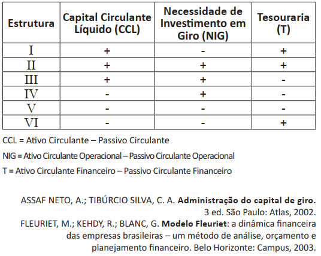
Com base nas estruturas financeiras apresentadas, avalie as afirmações abaixo.
I. Organizações que exibem estrutura do tipo I estão em excelente situação financeira em razão do elevado nível de liquidez praticado, pois têm recursos permanentes aplicados no ativo circulante.
II. Organizações que exibem estrutura do tipo IV estão em situação financeira confortável, embora tenham saldo de tesouraria negativo em decorrência da necessidade de captação de recursos de longo prazo para investimento no CCL.
III. Organizações que exibem estrutura do tipo V estão em uma situação em que recursos de curto prazo financeiros e operacionais financiam investimentos de maior prazo, o que evidencia uma estrutura inadequada de gestão financeira de capital de giro.
É correto o que se afirma em
II, apenas.
III, apenas.
I e II, apenas.
I e III, apenas.
I, II e III.
As decisões sobre a localização de empresas são estratégicas e integram o planejamento global do negócio. Considerando que o preço de venda da grande maioria dos bens produzidos é estabelecido pelo mercado, faz-se necessário que as empresas conheçam em detalhes os custos nos quais incorrerão em determinada localidade. O modelo padrão “custo-volume-lucro” é útil na decisão de localização. A figura a seguir apresenta, em um único gráfico, as curvas de custo total versus quantidade produzida mensalmente para as cidades de Brasília, São Paulo e Goiânia, as quais foram previamente selecionadas para receber uma nova fábrica de brinquedos. Sabe-se que a receita total é a mesma para as três localidades e que a decisão com base no lucro esperado em cada localidade varia com a quantidade produzida.
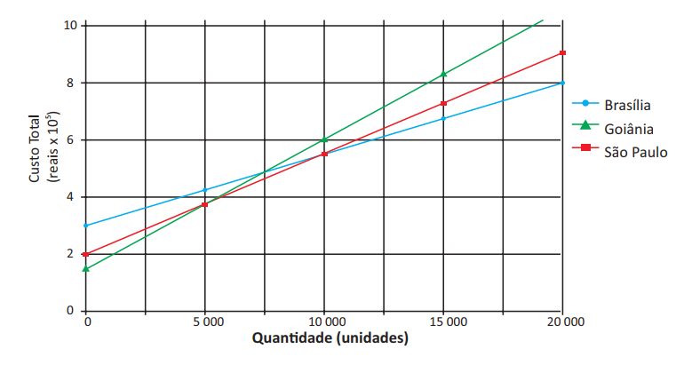
A análise do modelo de “custo-volume-lucro” apresentado no gráfico revela que
São Paulo é a localidade que proporcionará maior lucro para a nova fábrica, se a quantidade mensal a ser produzida variar entre 5 000 e 10 000 unidades, considerando-se a estrutura de custos apresentada.
São Paulo é a cidade na qual deve ser instalada a nova unidade produtiva, se a quantidade a ser produzida mensalmente for maior que 7 500 unidades, pois, a partir desse volume de produção, é a localidade que proporcionará maior lucro.
Brasília é a localidade mais indicada para receber a nova fábrica para volumes de produção mensal inferiores a5 000 unidades, pois é a cidade que viabilizará maior lucro.
Goiânia deve receber a instalação da nova fábrica, se a quantidade produzida mensalmente for superior a 10 000 unidades, tendo em vista que, nas condições apresentadas, é a cidade que poderá dar maior lucro.
tanto Goiânia quanto Brasília podem receber a nova fábrica, se o objetivo é produzir uma quantidade mensal exatamente igual a 5 000 unidades, considerando que o lucro será o mesmo nas duas localidades.
A Diretoria Financeira da empresa Átria informou que, atualmente, a estrutura de capital é composta de R$ 6 000 000,00 de dívidas de longo prazo, captadas junto ao Banco Nacional de Desenvolvimento Econômico e Social (BNDES), ao custo de 6% a.a. A empresa tem, hoje, 2 milhões de ações ordinárias distribuídas, ao valor de mercado de R$ 11,00/ação. A empresa é tributada à alíquota de 30%. O preço médio de venda de seus produtos é de R$ 118,00, os custos variáveis unitários são de R$ 69,00 e os custos fixos são da ordem de R$ 1 428 000,00. A quantidade vendida do exercício anterior foi de 200 000 unidades. Espera-se que a economia nos próximos 3 anos ganhe ainda mais fôlego e expansão.
O desempenho financeiro da Átria é especificado na Demonstração de Resultado do Exercício (DRE) a seguir.
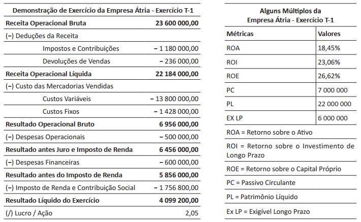
Considerando a DRE acima e tendo em vista os resultados para os diferentes indicadores e múltiplos, avalie as seguintes asserções e a relação proposta entre elas.
I. A alavancagem financeira adotada pela empresa Átria gerou efeito positivo nos resultados da empresa.
PORQUE
II. Com a economia em expansão, torna-se mais intensa a geração de resultados líquidos a partir dos investimentos realizados pela empresa Átria com recursos de terceiros, uma vez que estes contribuem para gerar resultados para a empresa.
As asserções I e II são proposições verdadeiras, e a II é uma justificativa da I.
As asserções I e II são proposições verdadeiras, mas a II não é uma justificativa da I.
A asserção I é uma proposição verdadeira, e a II é uma proposição falsa.
A asserção I é uma proposição falsa, e a II é uma proposição verdadeira.
As asserções I e II são proposições falsas.
Um microempresário está avaliando a captação de recursos com o objetivo de implementar um projeto de substituição de equipamentos de sua empresa. Do total dos recursos necessários, 40% serão financiados pelo Banco Nacional de Desenvolvimento Econômico e Social (BNDES), ao custo de 10% a.a.; 10% dos recursos serão obtidos de uma linha de crédito do banco com o qual a empresa mantém relacionamento, ao custo de 18% a.a.; e o restante dos recursos necessários virão dos lucros retidos pela empresa.
Com base nas especificações da captação de recursos acima descrita e desconsiderando o risco do projeto e os efeitos do imposto de renda, avalie as afirmações seguintes.
I. O custo de capital de terceiros do projeto de substituição é de 5,80% a.a.
II. Se a rentabilidade do projeto está estimada em 17% a.a., então o custo de capital próprio desse investimento deve ser inferior a 22,40% a.a., para que o empreendimento seja viável.
III. A expansão do endividamento deve promover aumento no custo de capital próprio da empresa.
I, apenas.
II e III, apenas.
O diretor de operações da Biomais Bebidas Ltda. deseja substituir um equipamento de controle químico mecânico por outro eletrônico. Existem três equipamentos candidatos: X, Y e Z. Apesar de o investimento inicial ser o mesmo para todos os equipamentos, a magnitude e a época de ocorrência dos fluxos de caixa intermediários diferem em razão dos custos operacionais definidos pelas especificações técnicas de cada equipamento. O custo médio ponderado de capital, tido como a taxa mínima de atratividade para a empresa, é de 23% a.a. Os perfis de valor presente líquido (VPL) que sintetizam os resultados estão representados na figura a seguir.
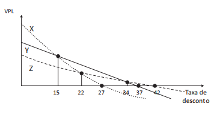
Considerando os perfis de VPL para as três propostas candidatas, avalie as afirmações seguintes.
I. A análise da dinâmica dos fluxos de caixa líquidos do equipamento Y indica que a taxa interna de retorno desse equipamento é de 34% a.a.
II. A melhor alternativa de investimento para a empresa é a escolha pelo equipamento X, considerando a análise pelo VPL.
III. Se a taxa mínima de atratividade fosse para 27% a.a., a escolha pelo equipamento mais viável não deveria ser alterada.
Os gestores de uma empresa realizaram avaliação de duas alternativas de investimento (A e B), com probabilidades de ocorrência para situações de mercado em recessão, em estabilidade e em expansão, respectivamente, de 25%, 50% e 25%. A tabela a seguir apresenta o retorno esperado em cada situação.
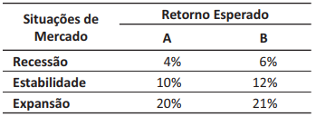
A comparação das alternativas será feita com base na média ponderada dos retornos por suas probabilidades de ocorrência. Nesse caso, os retornos esperados para as alternativas A e B são, respectivamente, de
10,00% e 12,00%.
11,00% e 12,75%.
11,33% e 12,75%.
11,33% e 13,00%.
12,00% e 13,50%.
Em determinado país, entrou em vigor uma rigorosa legislação ambiental que bane a fabricação de produtos à base de amianto, em razão dos danos causados ao meio ambiente e à saúde humana. O Conselho de Administração de uma indústria do setor solicitou ao diretor financeiro que avaliasse as alternativas à disposição, a fim de tomar uma decisão quanto ao futuro da empresa. Após estudos detalhados, o diretor apresentou duas alternativas viáveis do ponto de vista financeiro.
ALTERNATIVA 1
Transferência da fábrica para um país em que a legislação é omissa quanto ao assunto, visto que as instalações atuais ainda têm uma vida econômica considerável. O diretor observou que produtos à base de amianto foram banidos de todos os países com maiores Índices de Desenvolvimento Humano. Embora o investimento necessário para a transferência seja considerável, os países elegíveis para receber a fábrica caracterizam-se por apresentarem custos de mão de obra baixos e elevado potencial de vendas. O investimento é estimado em $ 250 milhões, com Valor Presente Líquido (VPL) de $ 100 milhões e Taxa Interna de Retorno (TIR) de 18,8%.
ALTERNATIVA 2
Adaptação das instalações atuais, visando-se a utilização de matérias-primas que causem menores danos ao meio ambiente e à saúde humana. O investimento estimado é de R$ 200 milhões, com VPL de $ 75 milhões e TIR de 20%.
O retorno exigido, ajustado ao risco, de ambas as alternativas é de 15%, não havendo problemas para captar os recursos necessários.
Considerando as alternativas à disposição da empresa, avalie as asseções a seguir e a relação proposta entre elas.
I. Do ponto de vista financeiro, a empresa deverá optar pela alternativa com maior TIR.
II. A alternativa com maior TIR maximizará a riqueza do acionista e não causará danos ao meio ambiente e à saúde.
A respeito dessas asserções, assinale a opção correta.
As asseções I e II são proposições verdadeiras, e a II é uma justificativa correta da I.
As asseções I e II são proposições verdadeiras, mas a II não é uma justificativa correta da I.
A análise do ponto de equilíbrio da empresa revela o nível de vendas necessário para cobrir as despesas operacionais. Nesse sentido, é possível avaliar a rentabilidade associada aos níveis de vendas da empresa. O ponto de equilíbrio é calculado pela fórmula a seguir.
Utilizando essa fórmula, o gerente financeiro de uma empresa quer verificar qual será o efeito, sobre o ponto de equilíbrio, do aumento ou diminuição, separadamente, do custo operacional fixo, do preço do produto, e do custo variável unitário, bem como de todas as variáveis ao mesmo tempo.
Considerando essa situação, avalie as afirmações a seguir.
I. Se apenas o custo operacional fixo aumentar, o ponto de equilíbrio da firma será reduzido, uma vez que o custo operacinal fixo não afeta os meios de produção da empresa.
II. Se apenas o preço do produto da empresa aumentar, o ponto de equilíbrio da firma será reduzido, porque será possível vender quantidade menor de produtos para cobrir as despesas operacionais.
III. Se apenas o custo variável unitário da empresa aumentar, o ponto de equilíbrio da firma aumentará, dado que o gasto com insumos será maior na linha de produção.
IV. Se o custo operacional fixo, o preço do produto e o custo variável unitário da empresa aumentarem, simultaneamente, o ponto de equilíbrio da firma não será alterado.
I.
II.
I e IV.
II e III.
III e IV.
No Balanço Social, procura-se apresentar uma análise condensada do desempenho da empresa nos três pilares da sustentabilidade: econômico, social e ambiental. No que diz respeito ao pilar social, ainda dividem-se os gastos da empresa com funcionários (indicadores sociais internos) e com a comunidade em que está inserida (indicadores sociais externos).
A tabela a seguir apresenta dados de uma versão resumida do Balanço Social anual de 2017 de uma empresa.
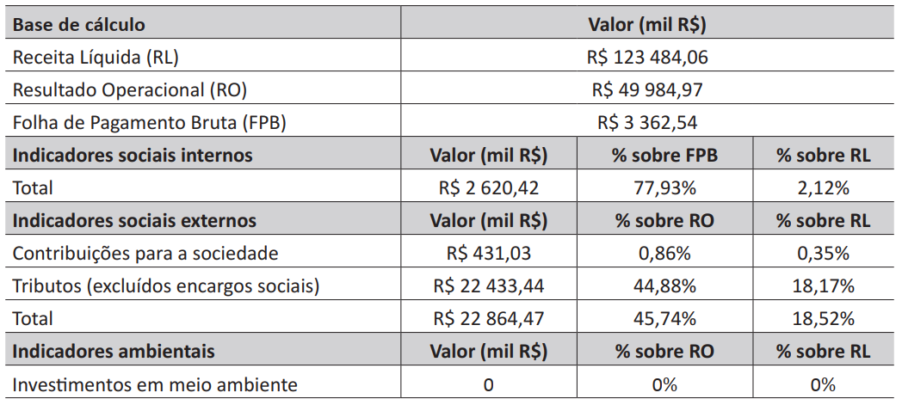
A partir da análise desses dados, conclui-se que a empresa
compensa a ausência de investimentos ambientais com os investimentos sociais.
considera, de forma equivocada, o pagamento de tributos como indicador social.
dispensa 45,74% do seu resultado operacional com o pagamento de tributos.
concentra maior parte dos seus investimentos sociais nos funcionários.
tem 77,93% dos seus custos direcionados para folha de pagamento.
Um clube de futebol brasileiro está se preparando para a próxima temporada de competições e tem duas possibilidades de contratação de jogadores, um argentino ou um uruguaio. Procurando quantificar os riscos e os ganhos possíveis com a contratação de cada jogador, a direção do clube elaborou a seguinte matriz de análise de riscos.
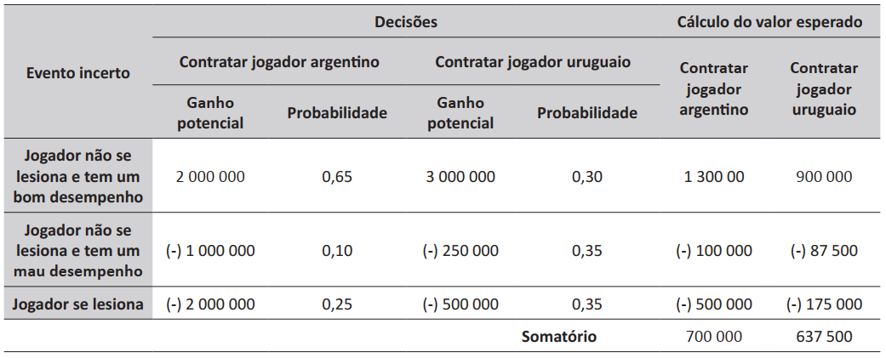
Com base na situação hipotética apresentada, avalie as asserções a seguir e a relação proposta entre elas.
I. A contratação do jogador argentino é recomendada com base na análise de risco.
II. A probabilidade de o jogador argentino se lesionar ou de ter um desempenho ruim é menor que a apresentada pelo jogador uruguaio.
As asserções I e II são proposições verdadeiras, e a II é uma justificativa correta da I.
As asserções I e II são proposições verdadeiras, mas a II não é uma justificativa correta da I.
Pesquisadores realizaram um estudo que envolveu 392 diretores financeiros de pequenas e grandes empresas e cujo foco se dirigiu para as práticas empresariais das companhias em que atuavam. Na pesquisa, os diretores financeiros tinham de indicar as técnicas de orçamento de capital que eles utilizavam. Verificou-se, no estudo, que a maioria usava o método do VPL (valor presente líquido; 74,9%) e o método da TIR (taxa interna de retorno; 75,7%) para avaliar os projetos, e muitos deles (56,7%) também usavam a abordagem do período de payback, além de outras técnicas.
GRAHAM, J. R., HARVEY, C. R. The theory and practice of corporate finance: evidence from the field. Journal of Financial Economics,V. 60, n. 1, 2001 (adaptado).
Considerando a pesquisa apresentada, avalie as asserções a seguir e a relação proposta entre elas.
I. Ao tomar decisões de aceitar ou rejeitar um projeto, os diretores financeiros das empresas devem calcular e levar em consideração diferentes indicadores, como o payback, payback descontado, VPL, TIR, TIR modificada (TIRM) e índice de lucratividade (IL).
II. Cada indicador captura informações diferentes e relevantes aos tomadores de decisão: o payback e o payback descontado avaliam risco e liquidez; o VPL, a TIR, a TIRM, e o IL avaliam lucratividade sob diferentes enfoques.
O relatório Focus, emitido semanalmente pelo Banco Central, reúne vários indicadores e estimativas de economistas das mais renomadas instituições financeiras do país. Três dos indicadores mais relevantes que compõem o relatório de mercado do Banco Central são:
Os gráficos a seguir mostram as estimativas apresentadas no relatório Focus, em abril de 2022, relativas à taxa de crescimento percentual do PIB (%), ao IPCA (%) e à taxa Selic (%), respectivamente, para os anos de 2022 a 2025.
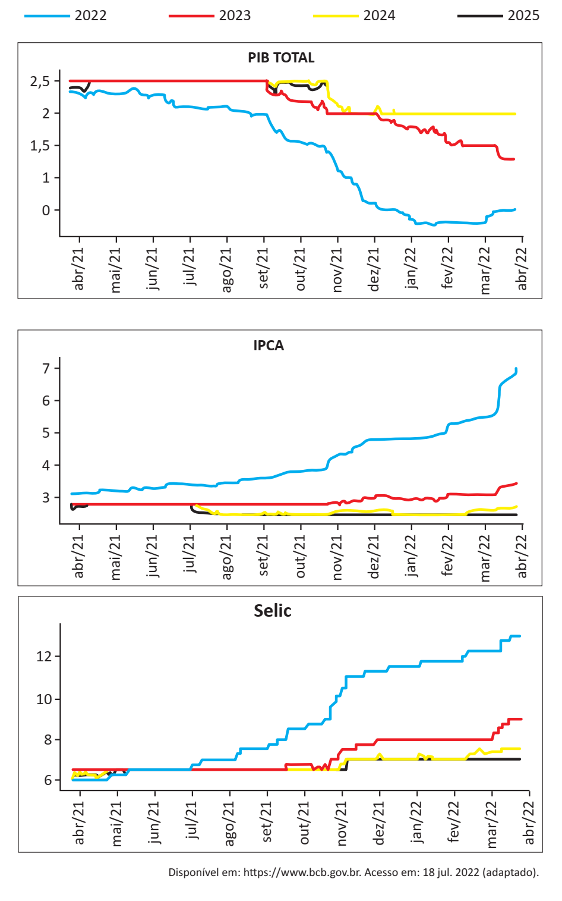
Considerando as informações e os gráficos apresentados, avalie as afirmações a seguir.
I. As estimativas de abril/22 apontam que, em 2023, a economia brasileira tenderá a crescer mais que a taxa de crescimento de 2022.
II. As estimativas de abril/22 apontam que a taxa de juros tenderá a ficar estável entre 2022 e 2024.
III. As estimativas de abril/22 apontam tendência de crescimento da inflação nos últimos 12 meses analisados.
Segundo o Instituto Ethos, em uma economia inclusiva, “os investimentos públicos e privados, as regras, as instituições, as tecnologias e os programas devem estar voltados também para o atendimento das necessidades e dos direitos de todos os seres humanos, sem o que não será possível construir ambientes sociais saudáveis em nenhuma atividade produtiva.”
Disponível em: http://www3.ethos.org.br/wp-content/uploads/2012/06/. Acesso em: 23 ago. 2022 (adaptado).
Considerando esse contexto, na economia inclusiva, deve-se
desenvolver valores éticos, sem a preocupação de torná-la uma economia verde e responsável.
desestimular qualquer tipo de concorrência, a qual sempre enfraquece a cooperação comunitária.
excluir a participação da base da pirâmide no processo produtivo e no mercado de bens e serviços.
respeitar as leis, mesmo que as regras de negócio possam desrespeitar direitos dos seres humanos.
promover o desenvolvimento equilibrado, considerando os capitais financeiro, humano, social e natural.
A saúde financeira de uma empresa depende do bom controle de seus fluxos de caixa e ciclo financeiro, além de sua capacidade de gerar lucro e de definir boas estratégias de financiamento e de investimento. A liquidez se refere à agilidade com que um investidor consegue desfazer-se de um investimento para voltar a ter dinheiro na mão, sem que, para isso, tenha prejuízo. Os indicadores de liquidez se caracterizam pela relação entre os componentes do ativo e do passivo circulante. A liquidez imediata, ainda mais rigorosa do que a liquidez seca, é o mais conservador dos índices de liquidez. Além de excluir o estoque para o cálculo, exclui também os direitos, como, por exemplo, vendas a prazo. Dessa forma, a liquidez imediata apenas considera valores já disponíveis em caixa, saldos bancários, aplicações, entre outros.
A tabela a seguir apresenta informações de três empresas.
Informações financeiras sobre as empresas
Grupo Contábil
Empresa Alfa
Empresa Delta
Empresa Gama
Disponível
R$ 450.000
R$ 600.000
R$ 670.000
Passivo Circulante
R$ 518.000
R$ 618.000
R$ 718.000
Disponível em: https://www.sebraeatende.com.br/system/files/indicadores_liquidez.pdf. Acesso em: 17 jul. 2022 (adaptado).
Considerando as informações apresentadas, os valores de liquidez imediata para as empresas Alfa, Delta e Gama, respectivamente, são
0,87; 0,97; 0,93.
0,52; 0,62; 0,72.
0,68; 0,18; 0,48.
9,68; 1,22; 1,39.
1,15; 1,03; 1,07.
As tabelas 1, 2 e 3 apresentam informações acerca dos investimentos financeiros A, B e C.
Tabela 1 – Risco e Retorno dos investimentos
A
B
C
Retorno
20%
24%
30%
Risco
13%
14%
CV
0,65
0,58
0,67
CV = Coeficiente de Variação = Risco/Retorno
Tabela 2 – Matriz de correlação dos investimentos
1
0,60
0,78
-0,55
Tabela 3 – Matriz de Covariâncias dos investimentos
0,0169
0,00546
0,02028
0,0196
-0,0154
0,0400
Nesse contexto, considerando as informações apresentadas e a formação de uma carteira composta por dois ativos, avalie as asserções a seguir e a relação proposta entre elas.
I. A carteira de investimento de mínimo risco deve ser formada pelos ativos B e C.
II. As combinações de ativos com correlações positivas e próximas à unidade diminuem o efeito de diversificação na carteira de investimentos.
A gerente da unidade gestora de saúde X de um pequeno município brasileiro defende sua unidade como a mais eficiente das três unidades do município, em termos de motivação de pessoal, pois, durante um ano de registros de faltas e presenças, observou apenas 18 faltas de seus 90 profissionais. A gerente assegura que sua unidade é a melhor no critério “nível de faltas relativo ao número de profissionais”, e a sua referência de comparação é a unidade gestora Y, que conta com 120 profissionais e registrou, no mesmo período, 24 faltas. Os gerentes das unidades Y e Z contestam o argumento da gerente da unidade X, o que se tornou fator de potencial conflito entre gestores. Para esclarecer melhor os fatos, o secretário de saúde fez um levantamento das três unidades gestoras de saúde (X, Y e Z), e observou que foram registradas, entre 350 profissionais, 62 faltas no total.
Com base no contexto acima, avalie as seguintes asserções e a relação proposta entre elas.
I. A gerente da unidade gestora de saúde X tem razão ao defender sua unidade como a mais eficiente do município.
II. A unidade gestora de saúde Z tem o mesmo nível de faltas relativo ao número de empregados dessa unidade do que a unidade gestora de saúde Y.
A maioria das empresas ainda aplica exclusivamente sistemas tradicionais de remuneração, embasados em descrições de atividades e responsabilidades de cada cargo ou função. A utilização de instrumentos como descrições de cargos, organogramas e planos de cargos e salários permite a muitas dessas empresas atingir um patamar mínimo de estruturação na gestão de seus recursos humanos. Entretanto, quando aplicados na condição de exclusão de outras formas, esses sistemas podem tornar-se anacrônicos em relação às novas formas de organização do trabalho e ao próprio direcionamento estratégico da empresa.
WOOD JUNIOR, T.; PICARELLI FILHO, V. (Coord.) Remuneração e carreira por habilidades e por competências: preparando a organizaçãopara a era das empresas de conhecimento intensivo. São Paulo: Atlas, 2004, p. 84 (adaptado).
O texto acima permite distinguir novos modelos estratégicos de modelos tradicionais de gestão de pessoas, associando-os aos contextos e às características das organizações. Nesse contexto, selecione quais das seguintes características correspondem aos novos modelos estratégicos de gestão de pessoas.
I. A estrutura organizacional apresenta muitos níveis hierárquicos e a ascensão salarial se faz preponderantemente por promoção horizontal e vertical, no âmbito do sistema de gestão de carreiras.
II. O processo decisório baseia-se em uma descrição de papéis e de responsabilidades clara e rigorosamente observada no dia a dia da organização.
III. O planejamento estratégico é realizado pela cúpula dirigente, com apoio de um grupo de especialistas de alto nível lotados no departamento de planejamento da matriz, produzindo diretrizes e objetivos negociais para a organização.
IV. O estilo e a cultura gerenciais privilegiam proximidade e compartilhamento de informações e de pontos de vista. Nesse contexto, as pessoas têm acesso franqueado aos seus dirigentes e às equipes de áreas funcionais e técnicas da organização.
V. As descrições de responsabilidades e de atribuições são estabelecidas de maneira genérica e contextualizada, privilegiando a explicitação dos resultados a serem alcançados, ao lado dos padrões de serviços, da qualidade e dos relacionamentos pessoais e negociais internos e externos.
São pertinentes apenas as características descritas em
I e II.
I e V.
IV e V.
A expressão “apagão de mão de obra” passou a ser veiculada na mídia especializada e entre agentes econômicos, sociais e políticos para retratar uma condição estrutural do mercado de trabalho brasileiro, no qual as necessidades organizacionais por competências laborais mais complexas e (ou) de elevada qualificação não são facilmente supridas. Considerando essa realidade, avalie se cada uma das organizações descritas nos itens a seguir adota as melhores práticas de gestão de pessoas, de acordo com abordagens contemporâneas.
I. Pressionada pelo mercado de trabalho, a organização tende a redesenhar seus processos de trabalho para ampliar a produtividade e a qualidade. Em paralelo, tende a ampliar os investimentos em capacitação para prover características multifuncionais aos empregados.
II. Pressionada pelo mercado de trabalho, a organização tende a conceber políticas remuneratórias diretas e (ou) indiretas mais atraentes. Tornando-se mais atrativa no mercado de trabalho, poderá “congelar” investimentos em capacitação de pessoas.
III. Pressionada pelo mercado de trabalho, a organização tende a reduzir de maneira significativa as exigências de recrutamento e de seleção para atrair pessoal. Em contrapartida, não terá de conceber políticas remuneratórias mais atraentes.
IV. Pressionada pelo mercado de trabalho, a organização tende a adotar modelos de remuneração variável mais agressivos, conjugados a critérios de promoção mais restritivos, no âmbito do sistema de gestão de carreiras e de remuneração.
V. Pressionada pelo mercado de trabalho, a organização tende a flexibilizar as exigências de recrutamento e de seleção e a ampliar seus investimentos em capacitação.
Atuam de forma adequada face ao “apagão de mão de obra” mencionado no texto apenas as organizações descritas em
A globalização dos negócios ampliou oportunidades e desafios para as empresas. A expansão das operações para outros países levou muitas empresas a criar programas de expatriação de executivos, e o sucesso desses programas depende de diversos fatores. O executivo expatriado precisa não apenas dominar o idioma do país-destino, mas também adaptar-se a culturas e contextos específicos. A convivência e o desempenho em ambientes de trabalho com valores e padrões comportamentais diferentes é quase sempre um empreendimento complexo. Muitos executivos retornam frustrados para seus países de origem após experiências de gestão malsucedidas no exterior. Na perspectiva organizacional, essas experiências configuram retorno não realizado de investimentos em pessoas e capacidade gerencial. Considerando o contexto apresentado, avalie as seguintes asserções e a relação proposta entre elas.
I. A adaptação bem-sucedida de um executivo expatriado depende, em larga medida, da acomodação, elemento do processo de aprendizagem por meio do qual o indivíduo modifica as suas estruturas cognitivas.
II. A vivência intercultural leva o executivo expatriado a experimentar, ocasionalmente, sensações de desconforto gerado pela dissonância cognitiva que ocorre quando ele se depara com crenças ou conhecimentos que desafiam aquilo que sempre julgou certo.
O processo de comunicação envolve elementos essenciais, como emissor, receptor, mensagem, canal e código. Em relação às barreiras que dificultam a comunicação, avalie as afirmações a seguir.
I. As barreiras à comunicação são variáveis que interferem na interpretação ou transmissão adequada das ideias entre indivíduos ou grupos.
II. O emprego de palavras ambíguas e a distância entre o emissor e o receptor configuram-se como barreiras externas à comunicação.
III. O uso de línguas diferentes pelo emissor e pelo receptor e a iluminação do espaço onde eles se comunicam são barreiras internas à comunicação.
Um intrumento importante para entender uma equipe e traçar ações mais eficazes de gestão é o mapeamento. Para realizar o mapeamento de equipe, é necessário considerar as competências elencadas pela organização como desejáveis. Nesse sentido, suponha que uma empresa tenha solicitado ao gestor de vendas que mapeie a sua equipe considerando as seguintes competências:
Utilizando uma escala de 1 a 4 pontos, na qual 1 correponde a pouco e 4 a muito, o gestor aplicou essa técnica e obteve o seguinte resultado.
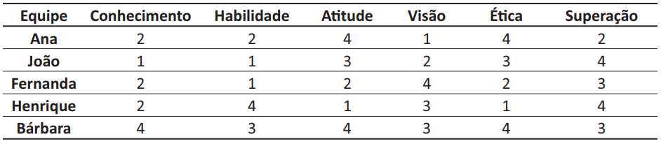
Com base nos resultados desse mapeamento, avalie as afirmações a seguir.
I. Uma ação a ser implementada é promover um treinamento para melhorar a habilidade de vendas, visto que os resultados indicam ser este um dos pontos mais críticos da equipe, como demonstram os resultados de Ana, João e Fernanda.
II. Henrique, apesar de sempre cumprir as metas, precisaria de acompanhamento próximo do gestor e de feedback, para melhorar seu comportamento interpessoal, espelhando-se em Ana e Bárbara.
III. Bárbara representa um membro formador de opinião e exemplo para a equipe. É uma colaboradora que deve ser reconhecida e incentivada para que ajude a melhorar o relacionamento da equipe como um todo.
I e II, apenas
Atualmente, um dos aspectos a ser observado para uma empresa tornar-se competitiva é a necessidade de que seus recursos humanos apresentem elevados níveis de produtividade, o que depende de capacitação, motivação e liderança. Ciente dessa necessidade, uma empresa contratou uma consultoria para analisar seus recursos humanos, visto que o respectivo departamento vem executando, exclusivamente, rotinas de departamento pessoal.
Considerando esse contexto, avalie as estratégias sugeridas pela consultoria à empresa descritas nas afirmações a seguir.
I. Adotar empowerment, descentralizando os poderes, proporcionando autonomia aos funcionários para tomar decisões, que tradicionalmente têm sido confiadas aos cheges.
II. Realizar downsizing, para terceirizar algumas atividades que não fazem parte do negócio principal da empresa.
III. Buscar liderança autocrática para motivar os colaboradores.
Um experiente administrador de vendas ofereceu a seus vendedores algumas orientações sobre como fechar um negócio. Os vendedores, então, mudaram as técnicas de vendas até então utilizadas, porque reconhecem as habilidades de vendas do administrador. Por outro lado, como esse mesmo líder não domina a área de finanças, seus vendedores podem ignorar seus conselhos a respeito do assunto.
BATEMAN, T. S.; SNELL, S. A. Administração: construindo vantagem competitiva. São Paulo: Atlas, 1998 (adaptado).
O exemplo reproduzido acima ilustra uma situação que envolve a fonte de poder
legítimo.
de coerção.
de referência.
de competência.
sobre recompensas.
Uma empresa, que tem 1 250 funcionários, divulgou a seguinte mensagem em um anúncio para vaga de emprego:
“Cargo: auxiliar de depósito. Descrição da função: auxiliar nos processos logísticos de recebimento, separação, conferência e embalagem de mercadorias. Observação: vaga exclusiva para pessoa com deficiência – PCD.”
Com base nessa situação, avalie as afirmações a seguir.
I. Ao oferecer a vaga com essa restrição, a empresa desconsidera princípios básicos da meritocracia empresarial, pois favorece um grupo em detrimento dos outros e provoca descontentamento entre os funcionários e, por consequência, baixo rendimento geral.
II. A legislação vigente exige que um mínimo de 5% da força de trabalho da empresa seja composta por pessoas com deficiência, o que pode ser alcançado com a abertura de vagas exclusivas para essa população.
III. A empresa deve usar o processo de recrutamento exclusivo para pessoas com deficiência como ferramenta para promoção de uma imagem organizacional positiva e inclusiva.
Uma empresa procura, como forma de viabilizar suas ações sociais, engajar seus funcionários em tais ações. Para garantir a participação efetiva de todos, no momento da contratação a empresa solicita ao funcionário que indique de que modo participará dessas ações:
• contribuindo com 0,5% do seu salário mensalmente para a realização de ações sociais;
• destinando mensalmente um turno do seu final de semana para trabalhar voluntariamente nas ações sociais promovidas pela empresa;
• realizando semanalmente uma hora extra de trabalho não remunerado, de forma a gerar recursos para dar suporte às ações sociais promovidas pela empresa.
A empresa exibe, logo na entrada de suas instalações, diversos troféus referentes a prêmios recebidos por suas ações sociais e também pelos esforços no sentido de estimular o voluntariado.
Com relação à essa prática, é correto afirmar que a empresa
estimula o engajamento efetivo do público interno a partir de práticas que permitem a cada um contribuir da forma que acredita ser mais adequada.
atende a expectativas gerais dos funcionários ao demonstrar, por meio da exposição dos troféus e prêmios recebidos, sua atuação social e o reconhecimento da sociedade.
cumpre adequadamente sua função na sociedade ao exigir que seus funcionários atuem em projetos sociais, mesmo que não destine recursos próprios para tal.
age de maneira incorreta ao aceitar os recursos doados voluntariamente pelos funcionários para financiar suas ações sociais.
age de forma antiética ao coagir o funcionário a contribuir com as suas ações sociais.
A comunicação no ambiente organizacional, seja ele interno ou externo, é um dos desafios enfrentados pelos gestores nas organizações. Falhas de comunicação causam dificuldades internas relacionadas a baixo desempenho, baixa auto-estima, falta de motivação, conflitos de interesses entre áreas funcionais e atraso na reação a ameaças e oportunidades externas. Para minimizar essas dificuldades, alguns gestores procuram melhorar seus conhecimentos e habilidades de comunicação e se inteirar dos sistemas e tecnologias da informação que podem contribuir para a comunicação entre as pessoas e para o trânsito das informações dentro e fora da organização.
Com base nesse contexto, assinale a opção correta em relação aos sistemas de informação que contribuem para o desenvolvimento de pessoas nas diferentes áreas da organização.
Os sistemas integrados ERP (enterprise resource planning) articulam os processos de várias áreas da organização em um único sistema de software, proporcionando aos gestores informações para o desenvolvimento do potencial das pessoas.
Os sistemas BI (business intelligence), por procurar sentidos e padrões ao analisarem grandes conjuntos de dados, auxiliam os gestores na tomada de decisões fundamentadas e inteligentes, que melhoram as habilidades sociais de sua equipe.
Os sistemas de gestão do conhecimento possibilitam aos gestores a utilização de conhecimentos armazenados por outros trabalhadores da organização para melhorar e desenvolver habilidades técnicas da sua equipe.
Os sistemas de informações gerenciais, ao proporcionarem relatórios sobre o desempenho da organização, auxiliam o gestor a monitorar e controlar o desenvolvimento dos pontos fortes das pessoas.
Os sistemas de processamento de transações auxiliam os gestores a desenvolverem a autoestima de sua equipe, ao monitorar o fluxo de transações rotineiras das diversas áreas da organização.
O investimento na formação pode fazer diferença durante o processo de recrutamento e seleção.
As situações são as mais diversas possíveis. Uma empresa de consultoria na área de recursos humanos, por exemplo, contratou um jovem de 20 anos, entre outros motivos, pelo fato de ele ter chegado à seleção brasileira juvenil de esgrima, mesmo tendo começado tarde no esporte, aos 17 anos.
Em outro caso, uma empresa da construção civil, contratou uma engenheira que havia passado três anos em uma fazenda coletiva, onde se dedicava à jardinagem, à pesca e à ajuda aos moradores, superando todo tipo de adversidades em razão da falta de estrutura local.
Há quem diga que um bom profissional é aquele que aprende algo mensurável todos os anos. Mas o que dizer de quem passa um ano morando em albergues na Europa, colhendo uvas na França ou trabalhando de garçom em Londres? E aquele que decide se inscrever nas fileiras de uma organização não-governamental?
O que o mercado pensa disso? A resposta é: ele adora isso.
FRANÇA, A. C. L. Práticas de Recursos Humanos: conceitos, ferramentas e procedimentos. São Paulo: Atlas, 2009 (adaptado).
Com base no texto apresentado, avalie as afirmações a seguir.
I. A dedicação à esgrima e a permanência em uma fazenda coletiva podem ser classificadas como formação alternativa.
II. Embora as experiências descritas possam ser mensuradas, elas não agregam valor às funções profissionais.
III. Certificados de curso de MBA ou de cursos de curta duração, cujos ganhos podem ser medidos, garantem maior qualificação profissional do que experiências pessoais exemplificadas no texto.
Segundo reportagem publicada em jornal de grande circulação, algumas empresas estão criando ambientes de trabalho tóxicos, com insegurança sobre o emprego e longas horas de trabalho, o que têm diminuído a produtividade de funcionários. Esse tipo de situação exige novas perspectivas para a gestão estratégica de pessoas, devendo as organizações considerar os potenciais fatores de estresse no trabalho.
Disponível em: <http://m.pme.estadao.com.br/noticias/pme,o-ambiente-de-trabalho-esta-matando-as-pessoas>.Acesso em: 29 jul. 2018 (adaptado).
Considerando o exposto acima, assinale a opção em que são apresentados, respectivamente, um fator ambiental, um fator organizacional e um fator individual de estresse no trabalho.
demandas interpessoais, incerteza econômica e diminuição da satisfação no trabalho.
incerteza política, demandas de tarefas e problemas econômicos.
produtividade, mudança tecnológica e demandas de papéis.
apoio social, demandas de controle e rotatividade.
lócus de controle, absenteísmo e produtividade.
TEXTO 1
Para algumas empresas de sucesso, contratar é uma das coisas mais importantes (se não a mais importante) do negócio. Essas empresas encaram o recrutamento de maneira bastante peculiar, o que pode surpreender quem não está acostumado aos processos seletivos. Uma dessas empresas posta suas vagas na página de carreiras, que é atualizada com frequência. Ao se inscrever, o candidato já entra em um processo seletivo um pouco diferente dos outros: são cerca de quatro conversas que tratam de hipóteses e padrões de comportamento no trabalho e envolvem pessoas de diferentes áreas, incluindo o seu futuro gestor. Em seguida, um dossiê é compilado e encaminhado para um comitê que toma a decisão final sobre a contratação. Esse comitê existe para que o processo de contratação seja coletivo e, portanto, com maior ênfase em dados do que em relacionamentos ou opiniões.
Disponível em: <https://exame.abril.com.br/carreira/os-segredos-de-quem-passa-na-rigorosa-selecao-do-google/>.Acesso em: 29 jul. 2018 (adaptado).
TEXTO 2
Na gestão por competências, o conceito de competência é utilizado para orientar processos organizacionais. Essa abordagem orienta, em especial, os processos relacionados à gestão de pessoas, com base em diferentes estratégias e instrumentos, com o intuito de identificar, desenvolver e mobilizar competências necessárias à consecução dos objetivos organizacionais.
BRANDÃO, H. P. Mapeamento de competências: métodos, técnicas e aplicações em gestão de pessoas.São Paulo: Atlas, 2012 (adaptado).
Com base nesses textos, avalie as afirmações a seguir.
I. A gestão por competências é utilizada com o propósito de revelar o potencial humano, visando ao recrutamento e à seleção de profissionais capazes de atender aos objetivos organizacionais.
II. A gestão por competências é uma prática que auxilia as decisões de alocação de colaboradores e a interação dos conhecimentos humano e organizacional.
III. Práticas participativas de gestão dependem da implementação da gestão por competências, já que esta constitui uma expressão do conhecimento coletivo organizacional.
O executivo que assumiu a operação brasileira de uma montadora de automóveis foi incumbido de uma tarefa muito difícil: fazer com que a divisão crescesse e voltasse a dar lucros. Com um estilo de gestão próprio, o executivo conseguiu reestruturar a empresa e assumiu um desafio ainda maior, tornando-se presidente da montadora na América Latina. Diante desse sucesso, o executivo foi considerado a pessoa ideal para conduzir reestruturações organizacionais e foi contratado por outra grande empresa para comandar uma revolução na sua estrutura.
Em uma empresa de engenharia, a confiança entre os funcionários, seus pares e seus chefes é considerada um fator-chave para o sucesso organizacional. O capital humano é visto como o maior ativo da empresa, e o compartilhamento de informações e o trabalho em equipe são fundamentais para que os projetos alcancem bons resultados.
TEXTO 3
A figura a seguir apresenta o modelo de liderança contingencial de Fiedler.
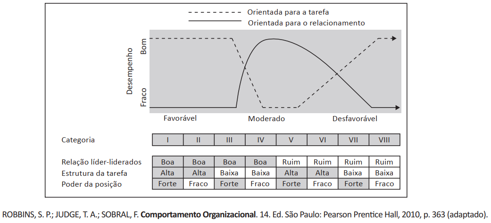
Com base na análise dos casos e no modelo de liderança apresentados, avalie as afirmações a seguir.
I. A liderança na empresa de engenharia é orientada para a tarefa e apresenta melhor desempenho em face de situações de controle moderado.
II. A liderança do executivo da montadora de automóveis apresenta melhor desempenho em situações extremamente favoráveis ou desfavoráveis.
III. A liderança do executivo da montadora de automóveis é orientada para a tarefa e somente apresenta melhor desempenho em face de situações das categorias I e VIII.
Será lançada uma publicação pioneira no Brasil, cujo objetivo é avaliar e reconhecer as melhores práticas de diversidade e inclusão das empresas brasileiras de vários setores. As empresas participantes serão reconhecidas por sua atuação em prol da equidade racial e de gênero, da inclusão da pessoa com deficiência e da promoção dos direitos LGBTI+. Além da identificação das ações desenvolvidas, a avaliação considerará o desempenho quantitativo das empresas, que apresentarão o perfil de diversidade da liderança e de seus quadros funcionais. Segundo a direção da publicação, a disponibilização de dados para o processo será, nessa primeira edição, um desafio. Nesse sentido, o peso dos dados quantitativos e qualitativos na avaliação será de 30% e 70%, respectivamente.
Disponível em: <https://exame.abril.com.br/ especiais/guia-exame-de-diversidade-2018/>. Acesso em: 29 jun. 2018 (adaptado).
Considerando as informações apresentadas, avalie as afirmações a seguir, que dizem respeito às políticas de diversidade organizacional.
I. A busca por políticas de diversidade é uma forma de as empresas promoverem inclusão, o que aumenta sua visibilidade perante seu público alvo e outros stakeholders.
II. A dificuldade de disponibilização dos dados sobre políticas de diversidades nas empresas ilustra o quão recente é a adoção dessas práticas pelas organizações.
III. A relação entre o desempenho quantitativo das empresas e a adoção de práticas de diversidade está consolidada na literatura.
Em virtude da crise ocasionada pela pandemia de Covid-19, uma empresa precisou demitir 20% de seus funcionários. No intuito de reduzir os impactos desse processo, a empresa buscará realizar a recolocação profissional desses funcionários por meio da contratação de consultoria.Considerando a situação apresentada, que procedimento deve ser adotado pela empresa?
Coaching.
Socialização.
Agenciamento.
Outplacement.
Empowerment.
Frente às dificuldades de avaliação de desempenho de pessoal durante o período de isolamento social em razão da pandemia de Covid-19, foi recomendada a adaptação de uma medida de uso consolidado em Marketing para a área de Gestão de pessoas. A proposta foi utilizar o que chamaram de “Net Performance Promoters Score (NPPS)”, ou “Escore Líquido de Promotores de Desempenho (ELPD)”, com avaliação a partir de três perguntas para cada trabalhador/colaborador:
1) Qual a probabilidade de você recomendar esta organização como local de trabalho para amigos ou parentes?, com respostas restritas a uma escala de 10 pontos, com extremos de 1 (indicando muito improvável) e 10 (indicando muito provável);
2) Por que você indicou este escore?, com resposta aberta;
3) o que poderia ser feito para você aumentar seu escore em 1 ponto?, com resposta aberta.
Concernente à primeira questão, respondentes que indicassem de 1 a 6 seriam categorizados como “detratores”, os que indicassem 9 ou 10 seriam categorizados como “promotores”, e os demais seriam categorizados como “passivos”. O ELPD é definido como a diferença entre o percentual de promotores e o percentual de detratores. De acordo com a proposta, trata-se de uma métrica conveniente, prática, relevante e útil para medir o desempenho de pessoal em períodos de crise, podendo ser útil após o final da pandemia.
AGUINIS, H.; BURGI-TIAN, J. Measuring performance during crises and beyond: the Performance Promoter Score.
Business Horizons, v. 64, n. 1, p. 149-160, 2021 (adaptado).
Considerando o texto apresentado, avalie as afirmações a seguir.
I. O ELPD constitui uma alternativa de avaliação de desempenho centrada no trabalhador/ colaborador, por meio de averiguação tanto quantitativa quanto qualitativa.
II. As empresas com valores positivos de ELPD são as que apresentam evidência de desempenho superior e de satisfação de pessoal, dada a predominância de detratores de produtividade no trabalho.
III. A pandemia de Covid-19 redefiniu o conceito de trabalho e, consequentemente, o de avaliação de desempenho, cuja operacionalização tornou-se mais simples, prática e conveniente, como é tradição nas pesquisas de marketing.
Um dos principais fatores para o sucesso organizacional na atualidade é a adoção da liderança situacional. Entende-se por liderança situacional aquela pautada na adaptação da forma de liderar tomando-se como parâmetro o contexto em que a empresa e a equipe se encontram. Na liderança situacional, implementam-se mudanças de tal forma que seja possível promover a motivação, a produtividade e o engajamento da equipe, o que repercute nos resultados empresariais. Para a maioria das empresas, a liderança que reconhece e valoriza o mérito individual é altamente recomendável. Algumas décadas atrás, muitos gerentes eram autocratas intransigentes, que davam ordens e mostravam pouca preocupação com aqueles que estavam hierarquicamente inferior a eles. Ao longo dos anos, esse estilo de liderança deu lugar a abordagens mais sensíveis e eficazes e há evidências sólidas que indicam que os funcionários acham esses estilos muito mais motivadores. Para manter um senso de equilíbrio, os líderes devem atender às necessidades emocionais de seus funcionários, ajudando-os a perceber que fazem parte de algo importante e comunicando apreço, preocupação e suporte.
LONGENECKER, J. G.; PETTY, J. W.; PALICH, L. E.; HOY, F. Administração de pequenas empresas: lançando e desenvolvendo iniciativas empreendedoras. São Paulo: Cengage, 2018 (adaptado).
Considerando as informações apresentadas no texto sobre liderança e sucesso organizacional, assinale a opção correta.
A preocupação com os funcionários da empresa implica entender suas demandas emocionais e expectativas de uma liderança sensível e eficaz, que motivará a busca de melhores resultados, considerando a forte competição entre as empresas.
As novas abordagens de liderança, diante do mundo empresarial competitivo, envolvem sensibilidade e preocupação com os funcionários das empresas, reconhecimento e valorização do mérito individual e atendimento às demandas emocionais dos funcionários.
A forma mais justa e contemporânea de atender às expectativas dos funcionários de uma empresa é por meio da liderança eficaz, pautada pela adoção de postura situacional, em que o líder é apoiado pelos subordinados quando estes percebem que os gestores não são autocráticos.
As empresas têm adotado o modelo de liderança situacional alinhado aos interesses dos funcionários, especialmente diante de forte competitividade empresarial, em razão da velocidade da informação veiculada na internet, o que contribui para o engajamento da equipe em busca do sucesso organizacional.
O suporte, o apreço e a preocupação são condições relevantes para a compreensão, pelos líderes, dos aspectos emocionais dos funcionários de uma empresa, por isso, no modelo de liderança situacional, deve constar o mérito individual dos colaboradores como elemento necessário para o êxito empresarial.
João é diretor de logística da BSW e constituiu um grupo para analisar a gestão de estoques da organização e propor melhorias. Inicialmente, foram identificadas duas concorrentes no mercado: as empresas MEW e RWZ, reconhecidas por suas práticas avançadas na gestão de estoques. Fundamentando-se em princípios éticos de legalidade, confidencialidade, uso e intercâmbio, o grupo decidiu implementar uma técnica de monitoramento do desempenho da gestão de estoques da concorrência (MEW e RWZ) e comparar os dados ao desempenho da BSW, ou seja, realizar um benchmarking funcional. Esse processo visa definir o nível de estoque que deve ser mantido na BSW, de modo a reduzir os custos associados ao excesso de estoque, os riscos e os correspondentes custos associados à falta de materiais.
Na tabela a seguir, são apresentados os indicadores de giros de estoque de 2011 dessas organizações.
Empresa
BSW
MEW
RWZ
Giro de estoque
20
80
140
Considerando que o custo anual das vendas de cada empresa é de R$ 14 000 000,00 e comparando a situação operacional das três organizações por meio do indicador de giro de estoque, analise as afirmações seguintes.
I. A necessidade de capital de giro é maior para a empresa BSW, pois, enquanto ela precisa de R$ 700 000,00 para financiar seus estoques, a MEW e a RWZ necessitam de R$ 175 000,00 e R$ 100 000,00, respectivamente.
II. A empresa MEW é a que pode apresentar menor problema financeiro e uma gestão de estoque que contribui para torná-la mais competitiva no mercado, uma vez que é a que tem menor capital investido em estoque.
III. A RWZ é a empresa que apresenta melhor administração logística e maior flexibilidade para atender a demanda de mercado e satisfazer seus clientes, tendo em vista que tem maior rotatividade de estoque e menor capital imobilizado em estoque.
I, I e III.
O planejamento e as decisões relativas à capacidade produtiva são estratégicos e vitais para a empresa, pois exercem forte influência sobre sua rentabilidade. Uma empresa com excesso de capacidade produtiva tem uma demanda inferior à sua capacidade máxima. Por outro lado, uma empresa com limitação de capacidade produtiva apresenta demanda potencial por seus produtos superior à sua capacidade instalada. Nessas duas situações, a rentabilidade das empresas não está sendo otimizada. A esse respeito, um aspecto importante que as empresas devem levar em consideração é o instante em que se dá o incremento de capacidade. Por exemplo, o incremento de capacidade pode antecipar-se ou seguir-se ao aumento de demanda, conforme mostram os gráficos a seguir.
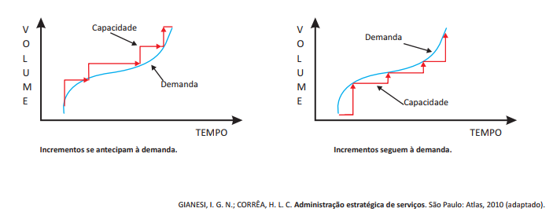
Considerando a influência das políticas quanto ao instante de se incrementar a capacidade nos critérios competitivos, conforme descrito acima, avalie as afirmações que se seguem.
I. A política de seguimento à demanda faz com que a organização opere muito próximo da capacidade máxima instalada, o que contribui para garantir excelência no serviço prestado aos clientes.
II. A decisão sobre o momento em que se dá o incremento de capacidade em relação ao aumento de demanda deve levar em consideração o nível de utilização dos recursos, o instante de desembolso, os riscos ao desempenho em velocidade e ao nível de serviços e o custo unitário decorrente de utilização da capacidade.
III. Do ponto de vista econômico, a política de seguimento à demanda para incremento da capacidade é recomendável quando se deseja postergar ao máximo o desembolso de capital e a organização opera com menor custo unitário de utilização da capacidade, já que a nova quantidade de capacidade será totalmente utilizada.
IV. O investimento em capital na política de incrementar a capacidade antes do aumento de demanda é antecipado, o que faz com que o sistema opere sem ociosidade e com menor custo unitário de utilização da capacidade, contribuindo também para que o nível dos serviços prestados aos clientes seja melhor.
É correto apenas o que se afirma em
Carlos, gerente de operações da fábrica de brinquedos RWZ, constatou que o estoque de um item componente de seu principal produto não atende adequadamente a política de gestão de materiais da fábrica, tendo em vista que os custos operacionais associados à manutenção do estoque desse item são muito elevados. Atento ao comportamento da demanda, Carlos passou a administrar o estoque utilizando o Modelo por Ponto de Pedido. Segundo esse modelo, sempre que o nível de estoque do item atingir o Ponto de Pedido, é providenciado um pedido de reposição de Qc unidades, as quais, se não ocorrer imprevisto, devem dar entrada em estoque dez (10) dias após a emissão do pedido. A figura a seguir ilustra esse modelo.
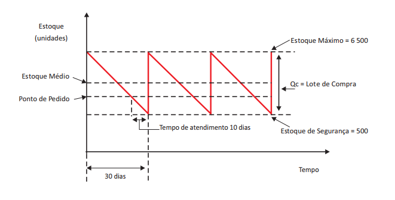
Com base nas condições apresentadas no Modelo por Ponto de Pedido proposto por Carlos, avalie as afirmações a seguir.
I. A RWZ deve administrar os custos operacionais relacionados ao capital empatado, ao espaço de armazenagem, à iluminação, à segurança e à obsolescência, já que o estoque médio é de 3 000 unidades.
II. A quantidade de itens que deve ser usada entre a data da encomenda e a data de recebimento do lote de compra, ou seja, a quantidade suficiente para atender à demanda durante o tempo de ressuprimento, é de 2 000 unidades.
III. O total de 4 500 unidades corresponde à parcela do estoque do item que será consumida até a data da encomenda do lote de compra, sendo de 2 500 unidades o nível do estoque no ponto de pedido.
IV. A demanda diária do item analisado por Carlos é de 200 unidades, e a quantidade a ser reposta, ou seja, o tamanho do lote de compra, é de 6 000 unidades.
I e III.
II e IV.
Desenvolvimento sustentável significa atender às necessidades das gerações presentes sem impedir que as gerações futuras também o façam. O princípio ético é de que as futuras gerações tenham acesso, pelo menos, ao mesmo nível de capital natural que as gerações predecessoras. Nesse contexto, surge o conceito de produção mais limpa, que busca a eficiência pelo não desperdício, minimização ou não geração de resíduos, eficiência energética e eliminação de impactos à saúde humana e ao ambiente, na obtenção de produtos atóxicos, no uso de reciclagem primária atóxica e na responsabilidade continuada do produtor. Na produção mais limpa, bens são produzidos de forma compatível com o que um ecossistema pode suportar, garantindo- se sustentabilidade e conservação de recursos, com respeito aos padrões de qualidade ambiental. Para que isso ocorra, é imperativo o envolvimento de toda a cadeia produtiva.
Considerando o texto apresentado, avalie as seguintes asserções a respeito da produção de bens e serviços sustentáveis e a relação proposta entre elas.
I. A produtividade dos sistemas de produção em uma economia sustentável é dependente de certificações do tipo produção mais limpa.
II. Uma economia sustentável depende não apenas de processos industriais mais limpos, mas também de produtos sustentáveis, ou seja, o foco da produção deve ser ampliado do gerenciamento de processos para o gerenciamento de produtos ao longo da cadeia produtiva.
Uma rede de transporte admite diferentes formatações com a utilização de diversos modais. Essas formatações têm por objetio a diminuição de custos, a otimização e o aumento da eficiência na distribuição. Um dos processo utilizados pelas empresas é o agrupamento de cargas de vários fornecedores ou de um fabricante, em um Centro de Distribuição (CD), como apresenta o esquema a seguir. As cargas chegam consolidadas aos CDs, são descarregadas, desconsolidadas, reagrupadas, separadas por pedidos e carregadas em vários caminhões, que seguem para vários destinos. Esse procedimento elimina, em muitos casos, processos desnecessários de armazenagem e de movimentação de produtos.
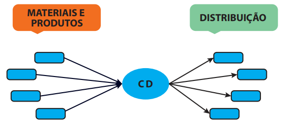
Essa operação logística é conhecida como
cross docking.
multimodal.
intermodal.
unimodal.
milk run.
No método da curva ABC, utilizado nos sistemas de controle de estoque, os itens são alocados em grupos e classificados pelas letras A, B e C, segundo seus respectivos valores ou custos.Ao analisar a configuração dos grupos ao longo da distribuição do valor total acumulado, a empresa deverá ser capaz de identificar quais itens devem ter seu controle intensificado e quais podem ser acompanhados de forma mais simplificada.
Com base no método da curva ABC, assinale a opção correta.
No grupo A estão alocados aproximadamente 20% dos itens, o controle pode ser mais simples, sendo necessário um estoque de segurança intermediário.
No grupo B estão alocados aproximadamente 50% dos itens, o controle pode ser mais simples, sendo necessário um estoque de segurança intermediário.
O conjunto de itens do grupo A corresponde a aproximadamente 80% do valor em estoque e deve ter controle mais rigoroso, sendo necessário um estoque de segurança reduzido.
O conjunto de itens do grupo C corresponde a aproximadamente 5% do valor em estoque e deve ter controle mais rigoroso, sendo necessário um estoque de segurança intermediário.
Os itens dos grupos B e C, somados, correspondem a aproximadamente 20% do valor em estoque e devem ter controles mais rigorosos, sendo necessário um estoque de segurança reduzido.
O planejamento da capacidade produtiva é uma preocupação constante dos gestores de serviços, dada a necessidade de capacidade suficiente para o atendimento à clientela. Em períodos de crise, esse planejamento se torna fundamental para o controle de custos tanto de investimento quanto de manutenção das instalações, por exemplo. Dessa forma, é imprescindível que o administrador de serviços busque identificar as melhores formas de combinar níveis de demanda e níveis de capacidade futura, de tal modo que os objetivos estratégicos sejam atendidos.
Considerando as políticas básicas para gestão da capacidade de serviços, avalie as afirmações a seguir.
I. Constitui política de longo prazo o ajuste moderado da capacidade de serviço de um restaurante à demanda, por meio da programação de turnos de trabalho, de modo a variar o número de funcionários em função da hora do dia ou do dia da semana.
II. A gestão de filas, com o intuito de absorver variações da demanda, pode ser aplicada por um gestor de um supermercado com a utilização de caixas expressos para clientes com compras de até 10 itens.
III. Uma das formas de os gestores de um centro universitário que opera em três turnos ajustar os níveis de demanda e os de capacidade é adotar uma política de preços diferenciados, atraindo os estudantes dos turnos com picos de demanda para os turnos com vales de demanda.
IV. A criação de serviços que tenham a ciclicidade invertiva em relação ao serviço normal, ou seja, desenvolver serviços complementares, pode ser utilizada por um gerente de um clube noturno localizado num shopping center de uma grande cidade.
I, III e IV.
II, III e IV.
A logística reversa consiste em conduzir o produto ou material desde o ponto de consumo até o ponto de origem e proporcionar o reúso e o descarte adequado desses materiais, recapturando o seu valor. A logística reversa tem evoluído muito nas grandes organizações, e tem trazido de volta grandes vantagens para essas empresas: o reúso de materiais e o reaproveitamento passam a ser intensificados e analisados de perto, assim como há consideráveis economias com embalagens retornáveis, por exemplo. Esse conjunto de interesses e entendimentos vêm, por sua vez, motivando o desenvolvimento de estudos sobre todo o processo de logística reversa e incentivando as empresas a investirem em novas tecnologias de informação e em melhorias de produtos e processos.
ANDRADE, H. F. et al. A logística reversa como meio de redução de custos: um de estudo de caso no grupo TEC eletrônico.Revista Capital Científico, v. 16, n. 3, jul./set. p. 66-80, 2018 (adaptado).
Com base nas informações do texto, assinale a opção correta.
As questões que envolvem o meio ambiente têm despertado nas organizações o interesse em definir uma posição competitiva efetiva, sendo o processo de logística reversa um meio eficaz para atingir tal objetivo.
A condução adequada dos produtos descartados pelo consumidor final até o local de distribuição é uma forma das empresas recapturarem o valor dos produtos.
As discussões a respeito de sustentabilidade encontram suporte na adoção, pelas empresas, da logística reversa como instrumento capaz de mitigar os problemas ambientais, melhorando a imagem pública da organização.
A logística reversa tem estimulado as grandes organizações a reverem suas estratégias no que diz respeito ao modelo operacional de descarte seletivo dos produtos e matérias-prima inservíveis ao seu processo produtivo.
Os investimentos em tecnologias da informação e a melhoria nos processos e produtos atestam o interesse das organizações em adotar uma postura ambiental em harmonia com os interesses da sociedade de consumo.
A empresa XYZ adota um planejamento e controle de produção totalmente manual, em que não há integração entre as áreas. Por meio de uma consultoria, a XYZ está analisando a implantação de novas técnicas e filosofias de produção para aumentar a vantagem competitiva.Acerca da implantação de técnicas e filosofias de produção no caso mencionado, avalie as afirmações a seguir.I. A empresa XYZ pode reduzir problemas, diminuir custos e eliminar perdas utilizando ferramentas da qualidade, como, por exemplo, Diagrama de Ishikawa, Brainstorming e Gráficos de Controle.II. O Sistema Enterprise Resource Planning (ERP) pode ajudar na integração dos setores da organização, uma vez que oferece subsídios para tomadas de decisão.III. A implantação da filosofia Just in Time possibilitará o controle da produção e a redução dos níveis de estoque da empresa XYZ.É correto o que se afirma em
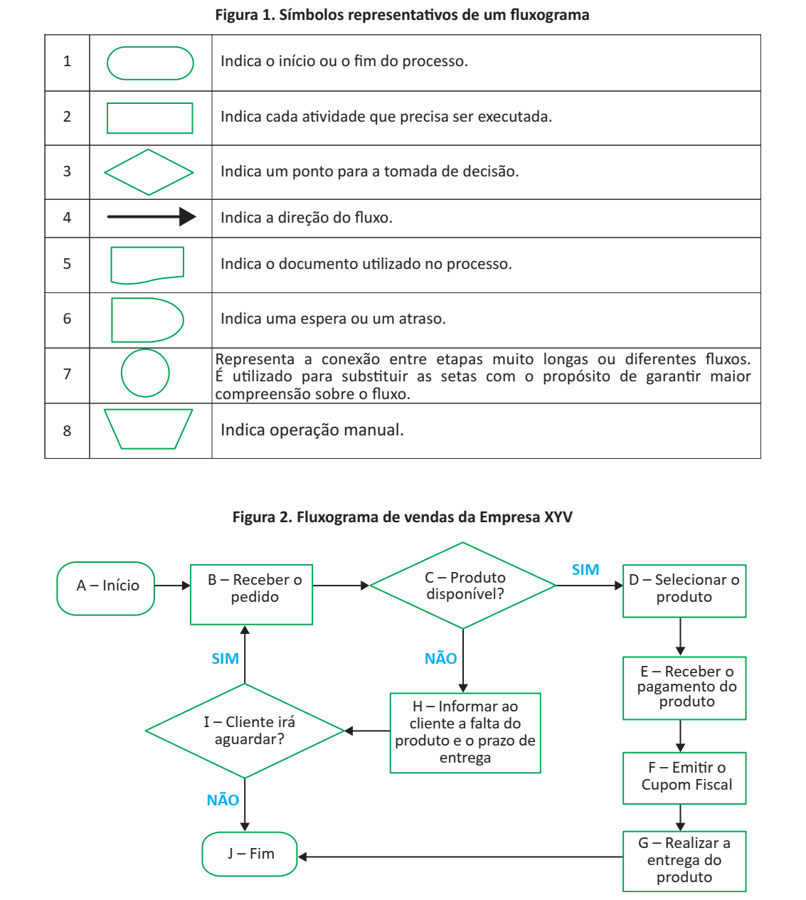
Considerando o fluxograma (figura 2) e os seus símbolos representativos (figura 1), avalie as afirmações a seguir.
I. A etapa I (Cliente irá aguardar?) representa uma tomada de decisão do cliente, porém o símbolo utilizado (n. 3) é inadequado, devendo ser substituído pelo símbolo n. 6.
II. Para que o fluxograma corresponda à realidade dos procedimentos, o símbolo utilizado na etapa F (Emitir o Cupom Fiscal) deve ser substituído pelo símbolo n. 5, mudança que resultará em fluxo que se desenvolve sem anormalidades.
III. A etapa H (Informar ao cliente a falta do produto e o prazo de entrega) corresponde a uma informação prestada pela empresa ao cliente e, portanto, o símbolo utilizado (n. 2) produzirá o mesmo efeito se alterado para o símbolo n. 3.
IV. Considerando que o cliente tenha decidido aguardar a entrega do produto (etapa I), os termos da etapa B (Receber o pedido) podem ser mantidos, sendo impróprio alterá-los para “Receber o produto”, uma vez que o processo do fluxograma deverá ser reiniciado.
III.
IV.
As tabelas a seguir apresentam estimativas de regressão entre os retornos da empresa Alfa, que atua na produção e comercialização de piscinas e implementos para piscinas nas cidades de São Paulo, Rio de Janeiro, Belo Horizonte e Vitória, e retornos do Ibovespa (índice da bolsa de valores de São Paulo).
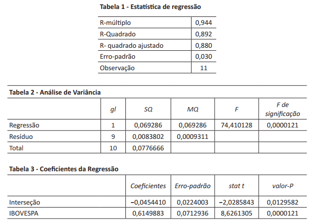
Considerando que o modelo estimado é robusto à presença de autocorrelação e heterocedasticidade nos resíduos, avalie as asserções a seguir e a relação proposta entre elas.
I. O risco de mercado da empresa Alfa é menor do que o do Ibovespa (carteira de mercado), o que significa que os retornos esperados para a Alfa serão menores do que os retornos esperados para o índice Bovespa.
II. O modelo é estatisticamente não significante tendo em vista que não se pode rejeitar a hipótese de que os coeficientes da regressão sejam estatisticamente diferentes de zero.
O proprietário de um pequeno restaurante decidiu avaliar a qualidade do seu serviço. Para tanto, durante uma semana, convidou seus clientes para avaliarem o serviço da casa com uma de três notas possíveis: 0 (zero), 5 (cinco) ou 10 (dez). Após a consolidação dos dados coletados, observou que: 20 clientes atribuíram à casa nota zero; 200 clientes, nota cinco; 180 clientes, nota dez. Na análise dos resultados, o proprietário decidiu extrair a média, a mediana e a moda das respostas. O proprietário oferecerá um bônus aos empregados se ao menos uma das três medidas usadas (média, mediana e moda) estiver acima de 8,0, e fará uma ação promocional para seus clientes caso a média seja inferior a 6,0.
Com base nessas informações, o proprietário deve
providenciar a ação promocional, pois a média ficou abaixo do valor de referência considerado para essa decisão.
providenciar o bônus para os empregados, pois o valor mediano ficou acima do ponto de referência considerado para essa decisão.
providenciar o bônus para os empregados, pois a moda ficou acima do valor de referência considerado para essa decisão.
manter o funcionamento do restaurante como está, pois nenhuma das medidas ficou acima de 8,0 e a mediana e a moda foram superiores a 6,0.
manter o funcionamento do restaurante como está, pois nenhuma das medidas ficou acima de 8,0 e a média foi superior a 6,0.
Não defendemos a ideia da inércia estrutural (Baum, 1999), em que a mudança adaptativa acarretada pela Tecnologia de Informação (TI) não é possível ou recomendada. Em alguns casos, o uso adequado da TI poderá resultar em melhoras significativas de performance e libertar o homem de tarefas repetitivas e enfadonhas. No entanto, a elevada taxa de fracasso e a descrença e o desinteresse da alta gestão nas implantações de TI que exijam mudanças comportamentais substanciais (Markus e Benjamin, 1997) sugerem que, mesmo no escopo limitado das mudanças adaptativas, a visão reducionista tem causado sérios problemas. Seria fortemente recomendável, então, que os gestores procurassem desenvolver uma compreensão melhor da natureza da informação e do fenômeno da cognição humana, caso se pretenda aumentar a efetividade da gestão estratégica de sistemas de informação.
PITASSI, C.; LEITÃO, S. P. Tecnologia de Informação e mudança: uma abordagem crítica. RAE - Revista de Administração de Empresas, v. 42, n. 2, p. 77-87, abril/junho 2002 (adaptado).
Considerando as ideias do texto acima, avalie as afirmações a seguir.
I. A inércia estrutural criada pela TI é recomendável para se obterem melhorias significativas de desempenho nas organizações.
II. A efetividade da gestão estratégica de sistemas de informação depende da compreensão da natureza da informação e dos processos cognitivos associados.
III. A libertação do homem de tarefas repetitivas e enfadonhas pela TI leva à eliminação dos processos burocratizados associados à atividade humana nas organizações.
Sistemas de Informação Gerencial (SIG) fornecem as informações necessárias para gerenciar com eficácia as organizações. Nesse sentido, gerenciar o volume de informações produzidas pelas organizações é um dos assuntos mais importantes nas operações de planejamento e controle. Portanto, é importante que todas as informações relevantes que estão dispersas na organização sejam reunidas.
OLIVEIRA, D.P.R. Sistemas de Informações Gerenciais: estratégias táticas operacionais. 14 ed. São Paulo: Atlas, 2011 (adaptado).
Considerando as ideias do texto, analise a seguinte situação hipotética:
Uma empresa familiar que produz equipamentos agrícolas está planejando ampliar sua linha de produtos. Hoje, os controles operacionais da empresa são manuais e não há integração entre os departamentos. O proprietário da empresa acredita que a implantação de recursos tecnológicos poderá propiciar sucesso na expansão pretendida.
Com base nessas informações, avalie as asserções a seguir e a relação proposta entre elas.
I. A implantação de um programa ERP (Enterprise Resource Planning) por essa empresa tornará as operações mais eficientes e rápidas, facilitando o planejamento, o controle e a tomada de decisão.
II. O programa ERP proporcionará à empresa integração dos departamentos, possibilitando automação e armazenagem de informações de negócios.
Entende-se tomada de decisão como o processo de se identificar um problema ou uma oportunidade e selecionar uma linha de ação para resolvê-lo ou aproveitá-la. O problema de transporte, por exemplo, demanda a determinação do menor custo de transporte de um produto entre diversas fábricas e depósitos.
LACHTERMACHER, G. Pesquisa Operacional na tomada de decisões: modelagem em Excel. 3 ed. Rio de Janeiro: Elsevier, 2007 (adaptado).
Devido a custos logísticos elevados no modal rodoviário, uma empresa busca melhorar sua eficiência e reduzir custos. O esquema a seguir representa as fábricas e os depósitos que essa empresa possui, além de custos de transporte, por tonelada, para cada rota entre fábrica e depósito.
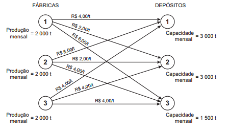
Considerando que toda a produção da empresa deverá ser transportada para seus depósitos, avalie as afirmações a seguir:
I. O custo total de transporte será de R$ 18 000,00 quando a empresa optar por transportar 1 000 toneladas da Fábrica 1 para o Depósito 1, 2 000 toneladas da Fábrica 3 para o Depósito 1 e a produção restante for atendida pelo Depósito 2.
II. O custo total de transporte será de R$ 18 000,00 quando a empresa optar por transportar 1 000 toneladas da Fábrica 2 para o Depósito 3, 2 000 toneladas da Fábrica 3 para o Depósito 1 e a produção restante for atendida pelo Depósito 2.
III. O custo total de transporte será de R$ 16 000,00 quando a empresa optar por transportar 1 000 toneladas da Fábrica 2 para o Depósito 3, 2 000 toneladas da Fábrica 3 para o Depósito 1 e a produção restante for atendida pelo Depósito 2.
É correto o que se afirma em:
As principais restrições de um projeto são o prazo, o custo e a qualidade, alcançados pelo cumprimento de um escopo definido, projetado, especificado e que é o anseio do cliente.
RAMOS FERREIRA, F. M. P. F.; PAGANOTTI, J. A.; PIUS, M. A. A interface na gestão de escopo, prazo, custo e qualidade em projetos. Boletim Técnico da Faculdade de Tecnologia de São Paulo, v. 24, 2008 (adaptado).
Com base no exposto, analise a situação a seguir.
Uma indústria de implementos agrícolas precisa que seus projetos sejam avaliados, e seus resultados monitorados, para que sejam concluídos no prazo.
Com base nessa situação, avalie as afirmativas a seguir, a respeito das estratégias que podem ser utilizadas pelo responsável pelo gerenciamento de projetos dessa indústria.
I. Acompanhamento por meio do Gráfico de Gantt.
II. Elaboração de diagrama do caminho crítico para as atividades do projeto.
III. Inspeções periódicas, principalmente inspeções de marcos, para verificar o cumprimento das metas.
A teoria matemática da Administração foi a que trouxe para os processos decisórios o foco no uso de métodos oriundos das ciências exatas, em especial a Matemática Aplicada, a Computação e a Estatística. Implementações de conhecimentos, tais como pesquisa operacional, teoria dos jogos, teoria das filas, teoria das probabilidades, programação linear e modelagem estatística preditiva, passaram a fazer parte do dia a dia de algumas áreas gerenciais.
A evolução gerencial recente diz respeito ao uso de grandes volumes de dados, com permanente atualização e diferentes formatos (como numérico, textual e visual), que vêm associados ao conceito de Big Data. O novo cenário para as práticas de gestão viabiliza um conceito de decisão baseada em dados ou de gestão baseada em dados.
ANDRADE, R.; AMBONI, N. Teoria Geral da Administração. São Paulo: Elsevier Brasil, 2017 (adaptado).
No que se refere a evolução recente comentada no texto, assinale a opção correta.
A gestão baseada em dados refere-se à prática de captação, manipulação e análise de dados para a tomada de decisão, utilizando, na atualidade, diferentes fontes, tipos e volumes de dados, além de ferramentas computacionais estatísticas mais sofisticadas e com aplicações complementares aos métodos convencionais de tomada de decisão.
Os conceitos associados à inteligência de negócios e à ciência de dados sinalizam uma reorientação paradigmática da teoria matemática, que se distancia dos métodos efetivamente matemáticos, como a pesquisa operacional ou a teoria das filas, e se aproxima da área de Educação e Psicologia, pelos estudos de inteligência, e da área computacional, pelo estudo de dados.
O uso dos diferentes tipos de dados citados sinaliza uma complementação de métodos de análise nos processos decisórios, com uso de métodos quantitativos convencionais, a exemplo das medidas estatísticas ou análise de regressão, e de métodos de análise da pesquisa qualitativa, a exemplo dos métodos etnográficos e projetivos.
O conceito de decisão baseada em dados, ainda que não represente novidade no cenário gerencial, vem adquirindo novos contornos em função de sua aproximação com o conceito de Big Data, o qual substitui pequenos volumes de dados e dispensa os procedimentos convencionais de pesquisa com pequenas amostras, como métodos experimentais ou estudos por entrevistas.
As tendências associadas ao Big Data, devido à utilização de grandes números e valores, atualizam a aproximação do conhecimento gerencial com a Matemática e a Estatística, com novas aplicações da teoria dos conjuntos infinitos e da lei estatística dos grandes números.
A gestão de processos BPM (Business Process Management) conecta gestão de negócios à tecnologia de informação, com o objetivo de aperfeiçoar os processos nas organizações. A utilização da BPM nas empresas tem como foco o aprimoramento dos resultados esperados do negócio, como o aumento de produtividade, a redução de burocracia, a melhoria na rentabilidade, a mitigação de defeitos e de desperdícios e a satisfação e retenção de clientes. A BPM foca também nas pessoas, que são o centro natural desses processos de negócio.
Disponível em: <http://www.abpmp-br.org/bpm-cbok-v3-0/> . Acesso em: 21 jul. 2018 (adaptado).
Considerando o conceito de BPM, avalie as afirmações a seguir.
I. Em uma organização, a BPM deve incluir liderança, equipes e pessoas envolvidas de forma colaborativa e propositiva.
II. As áreas funcionais de uma organização devem estar integradas para que o modelo de previsão de dados do processo seja adequado às necessidades organizacionais.
III. Em uma organização, a governança deve ter conhecimento das funcionalidades e limitações da ferramenta utilizada na gestão de processos.
Os executivos da área de gestão de processos e serviços de uma multinacional de telefonia móvel estão analisando o aumento das consultas ao Serviço de Atendimento ao Cliente (SAC) em determinada região do Brasil. Durante três semanas consecutivas, os profissionais do Departamento de Pesquisa e Desenvolvimento da empresa coletaram dados do SAC relativos a dias úteis das três semanas estudadas, conforme mostra o gráfico a seguir.
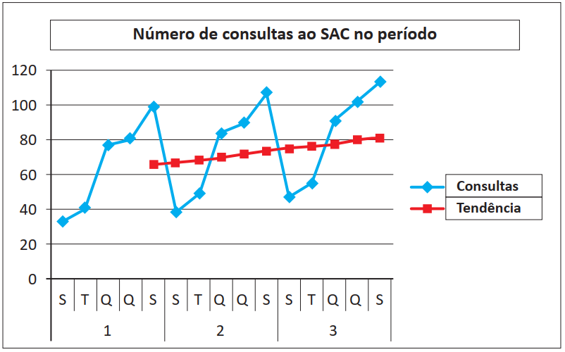
A gestão da empresa, após analisar o resultado da pesquisa, observou que havia necessidade de expansão do serviço, mesmo considerando o risco associado à implantação desse projeto de expansão, dadas as mudanças no cenário macroeconômico.
Considerando que a amostra represente o universo do fenômeno em questão, avalie as afirmações a seguir.
I. O número de consultas estimado pela equação de regressão linear simples tem aumentado ao longo do tempo.
II. O histórico de dados (n. de consultas ao SAC) apresenta, aparentemente, sazonalidade e distribuição regular.
III. A regressão é o melhor método para prever dados sazonais como, por exemplo, o número de consultas ao SAC na segunda-feira da semana 4.
Uma cooperativa de produtores agrícolas deseja escoar sua produção de cocos advinda das fazendas de origem para os centros consumidores, com o objetivo de atender as demandas desses locais no mês seguinte. Devido ao aumento do custo de produção e transporte, a cooperativa decidiu contratar um administrador para ajudar a reduzir o custo de distribuição, definindo o volume a ser transportado de cada região de origem para cada centro consumidor.
Suponha que 1 e 2 sejam as regiões de origem das fazendas de coco, e 3 e 4, os centros consumidores. A tabela 1 apresenta os valores dos fretes (em reais, por tonelada) para o referido transporte, entre cada par de origem-centro consumidor. A tabela 2 mostra os dados da oferta para cada ponto de origem, e a tabela 3, o volume para cada centro consumidor (destino).
Tabela 1 – Valores de fretes por toneladas de coco (R$/tonelada)
origem
Centro Consumidor (Destino)
3
4
R$ 100/ton.
R$ 150/ton.
2
R$ 90/ton.
R$ 135/ton.
Tabela 2 – Volume (em toneladas de coco) ofertado em cada origem
oferta
400
300
Tabela 3 – Volume (em toneladas de coco) demandado em cada destino
Destino
Demanda
250
450
Considere Xij uma variável pertencente ao conjunto dos números Reais, não negativos, que representa a quantidade de coco (em toneladas) a ser enviada de cada origem “i” ao destino “j”.
Nesse contexto, um modelo de apoio à decisão, de Programação Linear, que, quando resolvido, ajudará a cooperativa a tomar a decisão de quantas toneladas de coco devem ser enviadas de cada origem para cada destino é
Função Objetivo:
Minimizar $$Z = 100 \times X_{13} + 150 \times X_{14} + 90 \times X_{23} + 135 \times X_{24}$$
sujeiro às restrições:
$$X_{13} + X_{14} = 400$$
$$X_{23} + X_{24} = 300$$
$$X_{13}+ X_{23} = 250$$
$$X_{14} + X_{24} = 450$$
$$X_{13},X_{14},X_{23},X_{24} >= 0$$
Minimizar $$Z = 400 \times (100 \times X_{13} + 150 \times X_{14}) + 300 \times (125 \times X_{23} + 135 \times X_{24})$$
$$X_{13} + X_{23} = 250$$
Maximizar $$Z = 400 \times (100 \times X_{13} + 150 \times X_{14}) + 300 \times (125 \times X_{23} + 135 \times X_{24})$$
Maximizar $$Z = (100 + 400 + 250) \times X_{13} + (150 + 300 + 250) \times X_{14} + (90 + 400 + 250) \times X_{23} + (135 + 300 + 250) \times X_{24}$$
Embora praticada, pelo menos, desde os anos 1970, é a partir de 2010 que se verifica a intensificação da Gestão Baseada em Dados, que consiste em tomar dados de sistemas de informação transacionais ou de inteligência de mercado, que costumavam ficar depositados sem maior utilização, e transformá-los em informações e conhecimento de valor para decisões operacionais e estratégicas. Métodos de aprendizado de máquina e estatística avançada, antes ignorados, passaram a fazer parte do dia a dia de empresas e governos.
Na esfera estatal, um exemplo dessa mudança é o funcionamento do Laboratório de Inovação e Dados do Governo do Ceará, entendido como uma inovação pública que articula tecnologia da informação, inovação e gestão operacional. No evento de 2 anos do Laboratório, em 2021, foi destacado o seu papel fundamental para gerar mais impacto em suas entregas, com dados que permitem tratar cada indivíduo como cidadão.
Disponível em: https://www.ceara.gov.br/2021/12/01/iris-comemora-2-anos-de-entregas-e-realizacoes-com-foco-no-cidadao/. Acesso em: 24 jun. 2022 (adaptado).
A partir das informações apresentadas no texto, assinale a opção correta.
A utilização da Gestão Baseada em Dados possibilitou, desde 1970, a transformação dos dados em informação, conhecimento e decisão.
A Gestão Baseada em Dados consiste em uma inovação pública voltada a incrementar a gestão de dados a partir de um novo papel das tecnologias da informação transacionais.
A utilização da Gestão Baseada em Dados para apoio à gestão ganhou destaque a partir de 2010, provocando um aumento de práticas inovadoras em empresas e governos.
Os projetos públicos de Gestão Baseada em Dados são iniciativas que inovam, articulando soluções de tecnologia da informação típicas do setor privado para apoio à construção de políticas públicas estratégicas.
O projeto apresentado no texto materializa uma aproximação entre gestão governamental e privada em que Estado aprende com o setor empresarial práticas bem-sucedidas de Gestão Baseada em Dados e as aplica em favor dos cidadãos.
Um estudo de uma empresa de consultoria americana mostra que sete em cada dez empresários do mundo buscam alguma iniciativa de colaboração com outras empresas. O alvo preferencial são companhias com as quais já existe algum tipo de relacionamento, como fornecedores e clientes. “São vários os motivos para parcerias, desde a necessidade de adquirir conhecimento em áreas novas até simplesmente cortar custos”, afirma o responsável pela pesquisa. Assim, para ganhar competitividade, muitas empresas passaram a ver mais vantagens do que problemas em dividir informações estratégicas. É cada vez maior o número de empresas que criam projetos em conjunto para dividir custos e riscos. A parceria pode ser entre concorrentes ou entre empresas de mercados totalmente distintos, como nos modelos que seguem.
Modelo I - Para abrir mercados: o custo de chegar a uma nova região pode inviabilizar a investida. Convidar outra empresa ajuda a dividir os custos.
Modelo II - Para cortar custos: empresas gastam muito com atividades que não são sua especialidade, como transporte. Aliar-se a um especialista pode ser uma saída.
Modelo III - Para inovar: projetos de inovação são caros e incertos por natureza. Para reduzir os custos, cada vez mais empresas criam projetos para prospectar novas tecnologias.
SIMÕES, R. O inimigo virou sócio. Exame, São Paulo, ano 46, n. 1019,p. 109-110, 27 jun. 2012 (adaptado).
Considere a seguinte situação hipotética.
Três fabricantes de produtos distintos — uma de adereços e utilidades femininos; outra de meias para mulheres e lingeries; e uma terceira de produtos diversos com design não convencional —, atuantes de maneira isolada por meio de lojas próprias e franquias em cidades com mais de 500 mil habitantes, conceberam uma nova proposta de loja para cidades com até 250 mil habitantes, caracterizada pela venda conjunta dos itens das três marcas.
De acordo com a proposta de modelos de parceria apresentada pela empresa de consultoria americana, a situação descrita acima enquadra-se no(s) modelo(s)
O franchising permite que o franqueador aumente sua base de atuação com maior intensidade do que seria possível se dependesse apenas de recursos próprios para instalar, operar e gerir novas unidades. O fenômeno ocorre porque o franqueador faz uso daquilo que os estadunidenses denominam O.P.M. (“other people’s money”, ou seja, “o dinheiro dos outros”), situação em que os franqueados bancam os custos de implantação, operação e de gestão das respectivas unidades. Em segundo lugar, o franchising reduz a necessidade de o franqueador recrutar, selecionar e contratar pessoal, em particular gerentes que sejam capazes de administrar essas novas unidades, muitas vezes geridas pelos próprios franqueados.
Por meio do franchising, o franqueador pode, adicionalmente, ingressar em mercados nos quais dificilmente entraria se dependesse de seus recursos próprios, sejam financeiros ou humanos. Para isso, conta com a presença física e o conhecimento do franqueado sobre os hábitos e a cultura da região onde vive e trabalha.
ARAÚJO, A. P. B. Franchising. Disponível em: <http://www.biblioteca.sebrae.com.br>. Acesso em: 17 jul. 2012 (adaptado).
A figura a seguir representa a matriz de componentes do vetor de crescimento, também conhecida como matriz produtos e mercados, de Igor Ansoff.
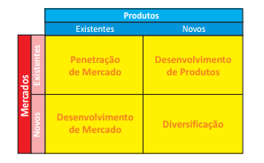
Suponha que uma empresa franqueadora do setor de lanchonetes deseje ampliar negócios sem modificar os princípios negociais habitualmente praticados. A partir do texto e dos quatro quadrantes da matriz de componentes do vetor de crescimento apresentada acima, qual das alternativas de crescimento seria mais pertinente ao caso?
Desenvolvimento de produto e diversificação.
Desenvolvimento de mercado e diversificação.
Penetração de mercado e diversificação.
Penetração de mercado e desenvolvimento de produto.
Penetração de mercado e desenvolvimento de mercado.
Segundo o presidente da Associação Brasileira de Supermercados (Abras), “uma concentração, em termos de mercado, de cerca de 30% não é nenhum ‘bicho de sete cabeças’. Há uma concentração em São Paulo, mas no restante do país a situação é diferente”.
Segundo a Abras, a participação das vendas das maiores empresas do setor de supermercados no Brasil passou de 40%, em 2009, para 43% em 2010. Embora a concentração avance, ainda está longe da realidade na Europa, onde as cinco maiores redes respondem por 70% a 80% das vendas, destacou a Abras.
PETRY, R. Competição continua mesmo com fusão entre Carrefour e Pão de Açúcar.São Paulo: Agência Estado, 2011 (adaptado).
Considerando o texto, conclui-se, com base na abordagem das forças competitivas de Michael Porter, que
há ampliação de ameaças de novos entrantes quando há aumento na concentração de empresas que participam do setor de supermercados no varejo brasileiro.
a globalização contribui para a redução do processo de concentração entre as empresas do setor de supermercados no varejo brasileiro.
o processo de concentração entre empresas do setor de supermercados no varejo brasileiro aumenta o poder de negociação dos compradores (clientes).
o processo de concentração entre empresas do setor de supermercados no varejo brasileiro aumenta o poder de negociação dos fornecedores.
o processo de aquisição ou fusão entre empresas do setor de supermercados no varejo brasileiro aumenta seu poder de negociação com fornecedores e compradores.
Uma empresa do setor de cosméticos estabeleeu como missão produzir itens com segurança e qualidade, garantindo a sustentabilidade dos negócios e a satisfação dos clientes, a partir dos conceitos de logística reversa. Como imagem institucional escolheu a ilustrada abaixo.
Para manterem a coerência com a missão dessa empresa e com os conceitos de logística reversa que a fundamentam, os gerentes devem
focar sua estratégia gerencial em canais diretos de distribuição.
tomar decisões sobre o ciclo de vida das embalagens dos produtos.
definir a logística reversa como responsabilidade exclusiva do departamento de produção.
propor ações sustentáveis que envolvam atividades desde a produção até a venda.
garantir a qualidade dos produtos por meio da execução direta de toda a cadeia produtiva.
As empresas devem inovar para se diferenciar da concorrência; não basta oferecer excelentes produtos e serviços. Este é um grande desafio para permanecerem competitivas no mercado. Portanto, deve-se criar uma cultura de gestão baseada navisibilidade e no entendimento dos processos, promovendo a integração e redução de conflitos interdepartamentais.
Considerando uma gestão por processos, avalie as afirmações a seguir.
I. A informação deve ser compartilhada após a realização de filtro pela hierarquia.
II. Há necessidade de integração em toda a Cadeia de Suprimentos.
III. Os objetivos são definidos visando gerar valor aos clientes.
Quando uma empresa lança um produto novo no mercado em que atua, é esperado que suas concorrentes tentem copiá-lo. Os novos entrantes em um segmento trazem nova capacidade, desejo de ganhar participação de mercado e, em geral, recursos substanciais.
PORTER, M. How competitive forces shape strategy. HBR, 1979 (adaptado)
As ameaças de novos entrantes são mais intensas quando há
economia de escala em produção, pesquisa, marketing ou serviços, na empresa pioneira.
necessidade de se investir grandes recursos financeiros para concorrer no segmento.
acesso fácil aos canais de distribuição utilizados pela empresa pioneira.
presença da empresa pioneira junto ao mercado consumidor.
política governamental que regulamenta o setor.
Uma forma simples de verificar o desempenho competitivo de um produto (bem ou serviço) é relacionar os atributos que o qualificam e atribuir notas ao seu desempenho em relação aos concorrentes e à relevância para os clientes.
A Matriz Importância x Desempenho, representada a seguir, mostra o posicionamento de dois atributos de um aparelho eletrônico. O ponto A representa o processo de fabricação com baixa emissão de carbono, e o ponto B, a quantidade e a distribuição geográfica da rede de assistência técnica do fabricante. Sabe-se, ainda, que o produto apresenta baixo índice de defeitos de fabricação.
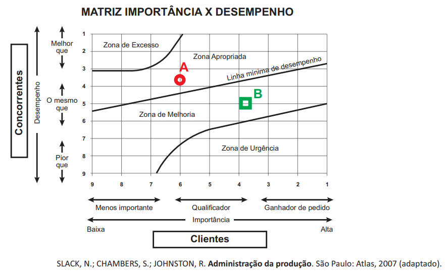
Com base na análise fo gráfico, avalie as afirmações a seguir, relativas ao desempenho competitivo do produto.
I. A rede de assistência técnica do aparelho eletrônico não supera a disponibilizada, em média, pelos concorrentes, mas isso não constitui fator negativo na imagem do produto no mercado.
II. A redução na percepção do mercado com relação à importância de uma produção com baixa emissão de carbono compromete a avaliação do produto.
III. O fabricante deve investir igualmente na ampliação da importância dos dois atributos para o cliente.
IV. A ação mais apropriada para o aumento do desempenho do produto é a ampliação da quantidade de assistências técnicas e a melhor distribuçião geográfica delas.
Texto 1
Em tempos atuais, a evolução do processo de gestão organizacional promove uma espécie de metamorfose da ciência da Administração e faz com que novos campos de conhecimento possam surgir. Uma dessas influências surge por meio da Gestão do Conhecimento, que introduz princípios de gestão que valorizam os ativos intangíveis da organização. As atividades organizacinoais tornam-se intensivas em conhecimento, demandando uma atividade altamente cognitiva e relacionada com práticas de pesquisa e desenvolvimento, o que gera inovação.
Exemplo disso é autilização da marca como um atributo do conhecimento organizacional, já que, por intermédio do conceito do Branding͕, ela se torna um ativo altamente estratégico para a organização.
Texto 2
É fácil crescer em um mercado favorável. Mas qual é o perigo disso? Em um cenário positivo, é difícil saber ao certo se as estratégias adotadas foram corretas ou se pareceram corretas porque o mercado estava em crescimento. Nesse tipo de situação, algumas marcas e empresas crescem muito ao lançar novos produtos e entrar em novos mercados, mesmo sendo pouco assetvidas em suas estratégias. A razão? O crescimento pode ter encobrir erros, que, em mercados menos favoráveis, podem levar à perda de competitividade
Disponível em: <http://exame.abril.com.br>. Acesso em: 22 jul. 2015 (adaptado).
A partir do exposto acerca dos ativos intangíeis da organização, avalie as afirmações a seguir.
I. A marca pode ser considerada um ativo intelectual, por compor a rede de relacionamentos externos da organização e facilitar a gestão do conhecimento organizacional.
II. As atividades intensivas em conhecimento são altamente cognitivas e, por suas características, são análogas às práticas de pesquisa e desenvolvimento, pois geram conhecimento organizacional de valor.
III. O capital intelectual fortalece a gestão do conhecimento organizacional e é composto pelo conhecimento estratégico (tácito + explícito) e pela rede de relacionamentos internos e externos da organização.
I e III, apenas
A demanda por produtos está alterando as estratégias no setor de moda. Os desfiles ocorrem tradicionalmente duas vezes por ano, exibindo modelos para a próxima estação seis meses antes. Porém, na Semana de Moda, o interesse majoritário dos clientes comuns está criando a demanda por produtos mais econômicos, disponibilizados bem antes da época. Isso pode alterar a forma como o setor de confecções trabalha. Uma possível estratégia de adaptação é a realização de quatro desfiles a cada ano e a criação e fabricação mais rápidas.
WILLIAMS, C. ADM. São Paulo: Cengage Learning, 2011 (adaptado).
Ao utilizar a estratégia de adaptação sugerida no texto, visa-se
fornecer produtos de qualidade aceitável, a preços baixos e custos de produção menores, para harmonizar as demandas dos clientes comuns com as dos clientes tradicionais.
adotar ações mercadológicas de produção, comunicação e comercialização mais adequadas às transformações percebidas no ambiente externo às empresas do setor.
minimizar os efeitos da concorrência entre as empresas de moda, redirecionando a competição para empreendimentos colaborativos que possibilitem sinergia ao longo das quatro estações do ano.
diferenciar os produtos das empresas, de modo que os clientes fiquem dispostos a pagar mais conforme a estação do ano em que a coleção for apresentada à mídia especializada e comentada nas redes sociais.
indicar um posicionamento da oferta de um produto customizado para atender as demandas de um grupo específico de clientes em acordo com as necessidades de vestimenta ensejadas por cada estação do ano.
Uma empresa vende assinaturas de transmissões online de eventos esportivos e culturais exclusivamente para smartphones. Em meio a diversas mudanças tecnológicas e de hábitos de consumo, como o advento da televisão pay per view e o crescimento do mercado de smartphones e tablets, os executivos dessa empresa realizaram uma pesquisa de mercado que apontou que as pessoas não compram mais de uma mídia para um mesmo evento. Um diagnóstico estratégico, realizado por meio de uma análise SWOT, identificou as forças e fraquezas e as ameaças e oportunidades para a empresa nesse cenário.
Com base nessa situação hipotética, avalie o diagnóstico estratégico, realizado por meio de análise SWOT, descrito nas afirmações a seguir:
I. A televisão pay per view é uma concorrente da empresa e representa uma ameaça ao seu negócio.
II. A atuação da empresa com a venda de assinaturas de transmissões online para smartphones representa uma oportunidade para o seu negócio.
III. O crescimento do mercado de smartphones é um ponto forte para a empresa.
Definir metas empresariais é algo desafiador, especialmente quando há muita incerteza envolvida. Como definir metas para os próximos 12 meses quando sua empresa está crescendo (ou mudando) muito rapidamente? As empresas do Vale do Silício resolveram esse problema adotando o framework de definição de metas OKR (objectives and key results). Um OKR tem dois componentes, o objetivo (o que queremos atingir) e um conjunto de key results (como sabemos se estamos chegando lá). Os diferenciais da metodologia OKR são a simplicidade do processo, os ciclos curtos de verificação e a participação e o engajamento de todos os colaboradores. O OKR existe para manter o alinhamento e a cadência da organização, sendo seu objetivo garantir que todos estejam caminhando na mesma direção e trabalhando com prioridades claras.
Disponível em: <https://startupi.com.br/2016/02/okr-defina-metas-como-o-silicon-valley/>. Acesso em: 29 jul. 2018 (adaptado).
Considerando o texto apresentado, avalie as asserções a seguir e a relação proposta entre elas.
I. O método OKR de planejamento e gestão estratégica é uma resposta das empresas inovadoras ao complexo ambiente corporativo da atualidade.
II. Um dos princípios do planejamento e gestão estratégica é a busca dos resultados esperados pela empresa, independentemente da ferramenta ou do método utilizados para tal fim.
Segundo dados do Censo da Educação Superior, observa-se, nos últimos anos, um aumento do número de Instituições de Educação Superior privadas no Brasil.Nessa nova realidade, o aumento da concorrência, aliado à redução gradativa do número de estudantes ingressantes no curso de Administração ano a ano, levou uma instituição que opera no ensino superior privado há mais de 30 anos, com ofertas de formação estritamente na modalidade presencial, a rever sua atuação.
Após uma análise ambiental detalhada, a instituição optou por utilizar nesse curso uma estratégia genérica de diferenciação de produto. Nessa mesma linha, por entender que não teria condições de criar um diferencial competitivo nas ofertas de curso a distância, já que seria um entrante tardio nesse mercado, a instituição optou por manter suas ofertas exclusivamente na modalidade presencial. Com base nisso, elaborou um planejamento estratégico para reformular o curso de acordo com esse direcionamento.
Com base no texto, assinale a opção em que as informações apresentadas no quadro são coerentes com a estratégia genérica definida pela instituição.
A implementação do Ciclo PDCA (plan, do, check, act; planejar, fazer, checar, agir) tem como objetivo a melhoria contínua dos processos organizacionais e pode contribuir para o sistema de gestão ambiental (SGA) e o sistema de gestão da qualidade (SGQ).
Nesse contexto, avalie as afirmações a seguir.
I. O Ciclo PDCA visa a melhoria contínua de um fluxo completo de valor ou de um processo individual, a fim de se criar mais valor com menos desperdício.
II. As auditorias para a identificação das conformidades e não conformidades no Ciclo PDCA devem ser realizadas na fase de implementação e operação desse sistema, com posterior adoção de medidas corretivas.
III. O Ciclo PDCA é a base para a implantação da qualidade total, que, por meio da metodologia 5S, consegue melhorar a qualidade de vida dos membros da equipe e do ambiente de trabalho.
IV. Com as ações corretivas ao final do primeiro Ciclo PDCA, é possível e desejável que seja criado um novo planejamento para a melhoria de determinado procedimento, iniciando-se um novo Ciclo PDCA, sendo esse novo ciclo, a partir do anterior, fundamental para o sucesso da utilização dessa ferramenta.
Ao utilizar o modelo de análise de mercado proposto por Porter, procura-se identificar as forças que atuam em um mercado dinâmico e competitivo, determinando-se a intensidade da competição em dado setor. A seguir, é apresentada a figura que representa o mencionado modelo.
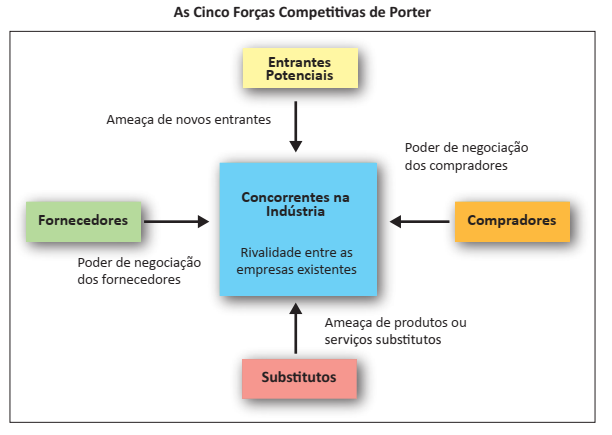
PORTER, M. Estratégias competitivas. Técnicas de análise para indústrias e concorrência. São Paulo: Atlas, 2005.
Considerando o modelo representado na figura, avalie as afirmações a seguir.
I. O poder de barganha de compradores é caracterizado pelo reduzido número de empresas concorrentes na indústria, acrescido de maior demanda de produtos pelos consumidores finais.
II. A ameaça de produtos e serviços substitutos acontece quando uma empresa mantém, por muito tempo, a mesma tecnologia e o mesmo portfólio de produtos, acrescidos de acompanhamento aquém das tendências de evolução tecnológica das demais empresas do mercado.
III. A ameaça de novos entrantes ocorre quando já existe uma empresa detentora de marca tradicional e clientes fidelizados e, por esse motivo, a empresa que tentar adentrar esse mercado tenderá a desencorajar-se, visto que terá de investir vultosos recursos na tentativa de competir.
Ao analisar o ambiente setorial para o planejamento estratégico da empresa onde trabalha, o diretor comercial da ABX Ltda. utilizou como ferramenta de análise o modelo das cinco forças proposto por Porter. Nessa análise, o diretor considerou, em valores percentuais, a medida de cada uma dessas forças para se tornarem favoráveis ou desfavoráveis à empresa, conforme tabela a seguir.
Dimensão
Favorável
Desfavorável
Rivalidade entre os concorrentes
63%
37%
Ameaça de novos entrantes
72%
28%
Poder de barganha dos fornecedores
57%
43%
Poder de barganha dos clientes
59%
41%
Ameaça de produtos ou serviços substitutos
70%
Com base nos resultados dessa análise, infere-se que o ambiente competitivo da empresa apresenta
concorrentes diretos com alta participação de mercado.
possibilidade de troca por produtos ou serviços substitutos.
fornecedores com domínio de mercado para definir preços e prazos.
entrada de novos competidores facilitada pelo baixo investimento inicial.
clientes com capacidade para determinar as margens de lucratividade da empresa.
O plano de negócios como parte fundamental do processo empreendedor é um instrumento que visa estruturar as principais concepções e alternativas para uma análise correta de viabilidade do negócio pretendido. A realização do plano de negócios envolve diversas etapas, sendo a análise do mercado e da competitividade importante para se revisarem e se adaptarem estratégias aos novos desafios. A figura a seguir apresenta o modelo de estratégias competitivas genéricas concebido por Porter.
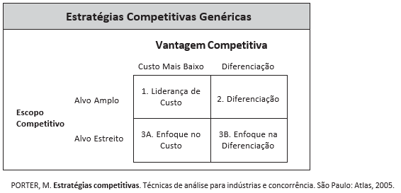
A partir das informações apresentadas no texto e na figura, avalie as afirmações a seguir.
I. Na liderança de custos, o empreendedor deve optar por uma estratégia de custo mais vantajosa que a de seus concorrentes, o que significa obter economias de escalas por meio de tecnologias apropriadas e, sobretudo, de alta produtividade.
II. Na estratégia de diferenciação, o empreendedor deve buscar ser o único em algum fator que o mercado consumidor considera importante, o que significa ser singular, diferenciado no marketing e em outras características.
III. Na estratégia de enfoque no custo, o empreendedor deve identificar uma solução de custo mais vantajosa e uma oferta de produto diferenciada dos seus concorrentes, o que significa a criação de produtos com preços mais baixos e massificados.
Uma fornecedora de itens de limpeza doméstica para supermercados optou por mudar o posicionamento estratégico de escala para o de diferenciação, investindo em matérias-primas mais eficientes, que melhorem a performance dos produtos, por meio da diversidade de fragrâncias e embalagens, visando atender clientes com maior poder aquisitivo.
Para comunicar sua mudança estratégica, de forma a reforçar sua nova posição de diferenciação, a empresa deve
priorizar grandes investimentos em mídias de massa, como televisões e jornais.
aguardar que os efeitos sejam percebidos pelos consumidores e, assim, alimentar o efeito boca a boca entre os consumidores, explorando o efeito surpresa.
investir em treinamento dos funcionários e aperfeiçoamento dos produtos, mantendo, ao mesmo tempo, a estratégia de comunicação da posição anterior, para justificar os novos investimentos.
manter o escopo amplo de comunicação (funcionários, clientes com menor e maior poder aquisitivo), de forma a mudar de posição estratégica na medida em que haja demanda por diferentes públicos.
apresentar os novos produtos ao público interno, por meio de reuniões com os funcionários, e ao público externo, por meio de comunicação segmentada e reforço do caráter premium de seus novos produtos.
Os executivos de uma empresa do setor de fast food que mantêm lojas em todo o território nacional estão preocupados com a recorrência de matérias na mída sobre os prejuízos causados à saúde pelos maus hábitos alimentares, atribuídos à baixa qualidade das refeições rápidas, foco do negócio da empresa. Como reação, esses executivos desenvolveram um processo de remodelação das lojas e das embalagens dos produtos, buscando incorporar uma concepção de boa relação com o meio ambiente, utilizando materiais reciclados e informando esse fato nas embalagens e nas campanhas de comunicação. Outra ação foi incorporar insumos naturais e orgânicos ao cardápio das lojas, ampliando o número de opções. Isso acarretou o aumento da complexidade na operação, elevando o tempo de espera dos clientes no balcão das lojas e o preço final de venda dos itens, o que implicou perda de vendas. Por outro lado, de acordo com uma pesquisa de mercado encomendada pela empresa, foi identificado aumento no valor da marca após as ações tomadas.
Considerando a situação acima, avalie as afirmações a seguir.
I. As organizações midiáticas que elaboraram matérias sobre a qualidade nutricional deficiente de certos alimentos podem ser consideradas stakeholders da empresa mencionada no caso.
II. Considerando-se as funções administrativas, a remodelação das lojas da empresa relaciona-se com a função controle.
III. A fim de reverter o aumento no tempo de espera dos clientes, é possível empregar técnicas de administração científica, tais como aquelas preconizadas por Frederick Taylor, de modo a incorporar eficiência à produção das opções ofertadas pelo cardápio das lojas.
IV. A empresa mencionada no caso adota a concepção de marketing orientado para vendas.
I, II e IV.
A Brasil Indústria de Calçados é uma empresa de sapatos que pretende aumentar sua participação no mercado. A empresa deseja conquistar novos mercados, aumentar suas vendas e melhorar sua competitividade na indústria calçadista. Seu diretor executivo está indeciso em implementar uma entre as seguintes estratégias sugeridas por seu gerente de planejamento: (1) integração vertical; (2) integração horizontal; (3) crescimento interno horizontal; e (4) crescimento interno vertical.
Considerando as estratégias sugeridas pelo gerente de planejamento ao diretor executivo, avalie as afirmações a seguir.
I. A decisão pela estratégia de integração vertical levaria a Brasil Indústria de Calçados a adquirir outra empresa que produz componentes para a fabricação de seus produtos atuais. Com isso, o diretor executivo teria controle maior da qualidade de seus vários processos produtivos.
II. Caso o diretor executivo da Brasil Indústria de Calçados opte pela integração horizontal, a empresa estará apta a realizar uma aliança estratégica do tipo ganha-ganha com uma ou mais empresas (concorrentes ou não). Dessa forma, o diretor executivo poderia compartilhar recursos e competências, assim como reduzir os riscos individuais de cada organização parceira.
III. Ao adotar a estratégia de crescimento interno horizontal, o diretor executivo da Brasil Indústria de Calçados pode decidir criar novas empresas que operem em negócios similares ao seu. Nesse sentido, será possível aumentar vendas, alcançar maior participação de mercado e ser mais competitivo na indústria calçadista.
IV. Com a estratégia de crescimento interno vertical, a Brasil Indústria de Calçados pode decidir adquirir um novo negócio relacionado ao canal de distribuição da empresa. Com isso, o diretor executivo criaria um relacionamento melhor com fornecedores e clientes.
Ludwick Marishane, de 22 anos de idade, estudante da Universidade de Cape Town, na África do Sul, desenvolveu um gel de banho que não exige água e sabão. Para divulgar o produto, ele também criou uma empresa. A ideia de Marishane é útil principalmente para lugares onde não há água adequada ou suficiente para o banho.
O gel promete eliminar bactérias, hidratar a pele e deixar um cheiro de banho tomado, bastando esfregá-lo sobre o corpo. Marishane acredita que seus principais clientes não estarão apenas em lugares onde não há água potável. A empresa diz que vai vender o gel para passageiros que farão voos de longa duração, para hotéis e locais onde existem guerras ou situações de conflitos. A criação de Marishane, extremamente parecida com o álcool gel, pode ajudar a reduzir doenças em áreas rurais causadas pela falta de água e higiene. A composição do gel mistura biocidas, bioflavonoides e hidratantes.
Com o gel, Marishane ganhou o prêmio máximo do Global Student Entrepreneur Awards de 2011. Agora, além de uma empresa, ele já detém a patente e a marca registrada do gel. Cada unidade do gel será vendida por US$ 0,50 para comunidades rurais e por US$ 1,50 para empresas. Segundo o estudante, uma unidade é suficiente para limpar todo o corpo e matar 99,9% dos germes.
DARAYA, V. Estudante cria forma de tomar banho sem água. Disponível em: <http://exame.abril.com.br>. Acesso em: 17 jul. 2012 (adaptado).
A figura abaixo representa a Matriz BCG (Boston Consulting Group) de participação de mercado.
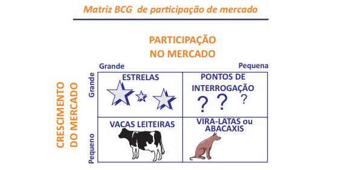
Suponha que uma empresa comercial que atue com a distribuição de diversos produtos resolva introduzir o gel criado por Marishane no seu portfólio de produtos. Nessa situação, em qual dos quadrantes da Matriz BGC o gel estaria posicionado?
Como pontos de interrogação, pois é um novo produto que ainda não tem participação de mercado, embora seja introduzido em um mercado em crescimento.
Como estrelas, pois tem grande participação no mercado e será introduzido em um mercado em crescimento constante.
Como vira-latas ou abacaxis, pois como o mercado e o produto são novos, tanto a participação quanto o crescimento do mercado são pequenos.
Como vacas leiteiras, pois tem grande potencial de vendas em um mercado crescente.
Como estrelas, pois é indicado para uso durante viagens de avião de longa distância.
Uma rede paulistana de hotéis acaba de arrecadar 435 milhões de reais para seu primeiro fundo de investimentos em hotéis, criado no fim de 2011, em parceria com uma gestora de investimentos. É o primeiro fundo criado para comprar hotéis inteiros no Brasil. Nas próximas semanas, esse recurso financeiro vai ser usado para comprar seis empreendimentos e integrá-los à rede de 25 hotéis, que hoje fatura 255 milhões de reais. Outros 20 empreendimentos estão no radar do fundo em todas as regiões do Brasil, com exceção do Norte do país.
LETHBRIDGE, T. Exame, São Paulo, ano 46, n. 1017, p. 19, 30 mai. 2012 (adaptado).
As organizações produtivas costumam definir como objetivo principal o aumento nas vendas, o incremento nos lucros, o aumento na participação de mercado ou, ainda, outras medidas de desempenho relacionadas ao crescimento e ao desenvolvimento do negócio. Metas de crescimento podem ser perseguidas por meio de estratégias diversas.
Que estratégia foi utilizada pela rede de hotéis de que trata o caso acima para promover seu crescimento?
Integração vertical.
Integração horizontal.
Diversificação.
Fusão.
Joint venture.
Todos os dias saem de uma empresa 300kg de empadinhas congeladas com recheios de camarão ou frango. A produção vai para as gôndolas de grandes redes supermercadistas. No início, as empadinhas eram feitas de maneira artesanal e vendidas em padarias e cantinas de escolas da região. Algunas anos depois, a empresa fechou seus primeiros contratos com grandes redes de supermercados, o que deu impulso a investimentos na mecanização da fábrica. A estratégia de vender um único tipo de produto a um só tipo de cliente foi fundamental para que a empresa ganhasse escala. Para dar continuidade ao ciclo do crescimento, a gerência da empresa optou pela aproximação com o consumidor final pela ampliação dos seus níveis de satisfação. Estrutura interna, mão de obra capacitada e know-how estão disponíveis para aimplementação dessa ação, foram, ainda, selecionadas algumas estratégias de Marketing Competitivo a serem adotadasd nesse contexto.
Considerando a situação descrita, avalie as estratégias de Marketing Competitivo apresentadas a seguir, em relação a sua adequação ao novo ciclo de crescimento pretendido pela empresa.
I. Criar novas variedades de empadinhas — novos recheios, linhas gourmets, pré-assadas, com ingredientes ecologicamente corretos — para atender consumidores que preferem produtos de melhor qualidade, desempenho ou com aspectos inovadores, ação que corresponde a uma estratégia de crescimento do tipo diversificação.
II. Contratar novos vendedores e qualificá-los para conseguir entrar no mercado de outras cidades, estados e regiões, ação que corresponde a uma estratégia de crescimento do tipo penetração de mercado.
III. Produzir e vender outros tipos de alimentos para os mesmos supermercados, tais como risoles, bolinhos e croquetes, diversificando seus produtos, ação que corresponde a uma estratégia de crescimento do tipo de desenvolvimento de produto.
IV. Diversificar os canais da empresa, passando a comercializar as empadinhas congeladas em restaurantes, lojas de conveniência, hotéis e cafeterias, ação que corresponde a uma estratégia de crescimento do tipo desenvolvimento de mercado.
II e IV
I, II, e III.
I, III e IV
A comunicação organizacional é um sistema articulado que tem início em um objetivo bem formulado, tornando-se parte do sistema organizacional. A situação descrita a seguir exemplifica essa afirmativa.
Em uma reunião de planejamento de uma empresa, ficou decidido que os projetos estratégicos seriam implementados de acordo com cronograma elaborado em conjunto com os executivos das outras áreas da empresa. Essa demanda foi registrada em um instrumento formal e enviada aos setores responsáveis por divulgar a decisão. Contudo, dois meses após a reunião, um projeto estratégico que tinha previsão de implementação para o mês 10 foi implementado no mês 8, o que consumiu parte do orçamento previsto para outro projeto estratégico.
Considerando o conjunto de informações apresentadas, avalie as asserções a seguir e a relação proposta entre elas.
I. A antecipação de implementação do projeto estratégico pode ter sido resultado de falha no sistema de comunicação organizacional.
II. Um ruído na comunicação organizacional pode desarticular receptor e emissor, prejudicando a mensagem enviada e colocando em risco a estratégia estabelecida pela organização.
Os gerentes de marketing das empresas, para conhecer os problemas e as oportunidades específicas no ambiente de competição, demandam estudos formais de mercado. Eles podem solicitar, por exemplo, uma pesquisa de satisfação, um teste de preferência de produto, uma previsão de vendas por região ou uma avaliação de propaganda.
KOTLER, P.; KELLER, K. L. Administração de Marketing. 12. ed. São Paulo: Prentice Hall, 2006 (adaptado).
A etapa do processo de pesquisa de mercado em que o pesquisador elabora distribuições de frequência e aplica técnicas estatísticas para chegar às suas conclusões é denominada
coleta de dados.
análise de dados.
apresentação dos resultados.
elaboração do plano de pesquisa.
definição do problema de pesquisa e dos objetivos da pesquisa.
Conhecer bem o consumidor é princípio básico para qualquer marca e pode ser também um grande diferencial na hora de ganhar mercado. É exatamente essa a principal vantagem das marcas regionais em relação às de atuação nacional. Muitas marcas podem ainda não ser conhecidas pela maioria dos brasileiros, mas já são responsáveis por uma boa fatia do mercado na região em que atuam. A regionalização das marcas é tão importante que muitas empresas nacionais e multinacionais mostram-se preocupadas em “falar a língua” do consumidor local para não perder espaço para as marcas que têm, em sua essência, um importante elemento de diferenciação: a mesma origem de seu cliente.
Disponível em: <https://exame.abril.com.br/marketing>.Acesso em: 15 jul. 2018 (adaptado).
Em relação à adaptação de marcas e produtos a contextos regionais, avalie as asserções a seguir e a relação proposta entre elas.
I. O fenômeno das marcas regionais é explicado pela segmentação demográfica.
II. A segmentação demográfica abrange critérios como sexo, idade e renda, importantes para o sucesso de uma marca ou produto no contexto regional.
No esforço de gestão orientada à competitividade, a decisão baseada em informação é sempre uma referência de valor para gestores mais eficientes e visionários. No contexto de grandes volumes de dados e com produção continuada nos meios virtuais, associados ao conceito de Big Data, os gestores têm à disposição dados que permitem melhor conhecimento de concorrentes, consumidores, colaboradores, parceiros e outros agentes de influência e interação. No campo particular de marketing, essa realidade alcança o conceito de inteligência de marketing, com foco nas variáveis de mercado e em dados e informações, por exemplo, sobre consumidores e concorrentes.
TURBAN, E. et al. Business intelligence: um enfoque gerencial para a inteligência do negócio. Porto Alegre: Bookman Editora, 2009 (adaptado).
Um debate sobre questões legais e éticas a respeito do uso de dados de consumidores atualmente acessíveis a diferentes tecnologias de prospecção surgiu em decorrência da abundância de informações nas redes sociais. A venda de tais dados a empresas interessadas em melhor direcionar seus esforços de marketing, sem a autorização da pessoa, pode vir a criar os mais diversos transtornos. A constante novidade dessas ferramentas e práticas dificulta a existência de referências legais de gestão e controle. A base de decisão ética parece ser a referência central para os gestores.
Disponível em: <https://super.abril.com.br/tecnologia/o-lado-negro-do-facebook/>. Acesso em: 27 jul. 2017 (adaptado).
Considerando os desenvolvimentos relativos à inteligência de marketing, avalie as afirmações a seguir.
I. Diferentemente da inteligência competitiva, voltada a dados externos, a inteligência de marketing se operacionaliza por meio dos sistemas de processamentos de transações de dados internos da organização, de modo que, com o devido consentimento do cliente, são eliminados os problemas éticos no uso de tecnologias para melhorar as decisões de marketing com bases em seus dados pessoais.
II. As redes sociais têm sido objeto de reflexão no debate contemporâneo porque as tecnologias disponíveis permitem extrapolar o interesse gerencial dos prestadores de serviços e gerar ações de marketing que, em algumas situações, não seriam permitidas pelos consumidores caso soubessem do uso de seus dados.
III. As ferramentas convencionais de inteligência competitiva, cuja aplicação abrange a inteligência de marketing, requerem cuidado e clareza no uso dos dados de mercado e dos clientes em potencial, sendo a disseminação de boas práticas, o uso de códigos de ética e a reflexão ética continuada exemplos de práticas que minimizam problemas em um cenário de falta de referência legal.
I, II e III
Há algum tempo, no ambiente organizacional, a comunicação corporativa deixou de ser feita apenas por e-mail e telefone. O contato com clientes, parceiros comerciais e entre colaboradores é realizado por meios de comunicação mais práticos como mensagens instantâneas, mídias sociais e videoconferência. Indispensáveis para a rotina de trabalho, essas tecnologias geraram a necessidade de administrá-las em uma única plataforma. Assim, surgiu a comunicação unificada.
Em princípio vista como facilitadora de negócios, a comunicação unificada se tornou uma vantagem competitiva, pela rapidez e até mesmo pela geração de novos serviços para o mercado. Além de ajudar no armazenamento de dados e realizar backups integrados, o mercado percebe e identifica os benefícios trazidos pela comunicação unificada.
Disponível em: <https://exame.abril.com.br/negocios/dino>.Acesso em: 21 jul. 2018 (adaptado).
Considerando essas informações, avalie as afirmações a seguir.
I. A utilização da comunicação unificada nas empresas proporciona a simplificação da gestão de seus canais de comunicação, reduzindo a complexidade e ampliando a eficiência.
II. A utilização da comunicação unificada nas empresas possibilita que seus colaboradores acessem os arquivos necessários a partir de vários dispositivos, incorporando praticidade à rotina de trabalho.
III. As empresas comprometidas com a gestão pautada nas demandas sociais, promovem a comunicação unificada no ambiente organizacional interno e externo.
Para que uma estratégia de CRM (customer relationship management ou gestão de relacionamento com o cliente), apoiada em recursos tecnológicos, seja capaz de atender seus objetivos, é preciso que a maioria das atividades da empresa esteja nela envolvida. Em geral, as estratégias de CRM têm como objetivo principal criar uma visão de 360° do cliente, ao mesmo tempo unificada e multidepartamental. O segredo da CRM de sucesso é uma filosofia e uma cultura comercial voltadas para o cliente e que garantam que toda atividade da empresa esteja a serviço das necessidades dele. Na CRM, primeiro deve ser feita a análise da qualidade e da eficiência dos processos relacionados aos clientes e depois esses processos devem ser eliminados, atualizados e redesenhados, ou criados novos processos, conforme necessário. Não é possível automatizar uma via de escape dos processos ruins. O mosaico de informações resultante é então usado para criar e automatizar processos que identificam, descrevem e valorizam os clientes. A CRM permite captar, permanecer próximo e reter os clientes para a organização.
LAUDON, K. C., LAUDON, J. Gerenciamento de sistemas de informação.Rio de Janeiro: LTC, 2001 (adaptado).
Em relação a esse texto, avalie as afirmações a seguir.
I. A CRM é utilizada como uma unidade de armazenagem dos clientes.
II. A CRM exige integração dos processos relacionados a clientes.
III. Há clientes rentáveis e outros não rentáveis, e a CRM é um meio de distingui-los.
IV. Nas empresas, a CRM visa o melhor gerenciamento dos recursos tecnológicos.
O proprietário de uma clínica de estética realizou uma pesquisa de satisfação em que foram avaliados oito atributos. Os consumidores foram questionados sobre a importância de tais atributos na escolha de uma clínica de estética, atribuindo uma nota ao desempenho da clínica em relação aos atributos apresentados. Para tanto, foram atribuídas as seguintes escalas.
Tabela 1 – Escala de importância
IMPORTÂNCIA
sem importância
pouco importante
importante
extremamente importante
Tabela 2 – Escala de desempenho
DESEMPENHO
ruim
regular
bom
excelente
Os resultados da mencionada pesquisa são apresentados na tabela a seguir.
Tabela 3 – Pesquisa de satisfação
Número do atributo
Descrição do atributo
Importância (em média)
Desempenho (em média)
Serviço feito da maneira correta da primeira vez
3,83
2,63
Qualificação dos funcionários
3,63
3,20
Atendimento rápido
3,60
3,50
Serviço disponível quando necessário
3,40
3,05
5
Preços baixos
3,38
2,00
6
Execução apenas do serviço necessário
3,10
3,11
7
Próximo de casa
2,52
2,65
8
Envio de informações sobre os serviços
2,05
3,33
Com base na combinação dos dados de importância e desempenho dos atributos avaliados, que ação o proprietário da clínica de estética deve priorizar?
Ofertar serviços adicionais.
Mudar a localização da clínica.
Adotar um padrão de atendimento mais ágil.
Buscar a execução de serviços sem erros.
Ampliar as ações de comunicação dos serviços oferecidos pela empresa.
A pesquisa de marketing inclui identificação, coleta, análise, disseminação e uso de informações, e cada fase desse processo é importante. Identificamos ou definimos o problema ou oportunidade de pesquisa de marketing e, a seguir, determinamos as informações necessárias para investigá-lo. Como toda oportunidade de marketing se traduz em um problema de pesquisa a ser investigado, os termos “problema” e “oportunidade” são usados de forma intercambiável. Em seguida, identificam-se as fontes relevantes de informações e avaliam-se os métodos de coleta de dados com sofisticação e complexidade variadas em função da sua utilidade. Os dados são coletados pelo método mais adequado e, posteriormente, são analisados e interpretados para proporcionar as devidas inferências. Finalmente, as constatações, implicações e recomendações permitem a utilização das informações para a tomada de decisões de marketing e ações diretas.
MALHOTRA, N. K. Pesquisa de marketing: uma orientação aplicada. 6. ed. São Paulo: Prentice Hall, 2011 (adaptado).
Considerando o texto apresentado, assinale a opção que apresenta apenas procedimentos de coleta e de análise de dados qualitativos que podem ser utilizados nas pesquisas de marketing.
Questionário; Séries Históricas; Cointegração Bivariada.
Experimento; Survey; Modelagem de Equações Estruturais.
Pesquisa Documental; Histograma; Diagrama de Dispersão.
Entrevista em Profundidade; Grupo Focal; Análise de Discurso.
Observação Participante; Levantamento de Tendências; Análise Preditiva.
A discussão sobre novas formas organizacionais explora modelos de gestão flexíveis, caracterizados pela tomada de decisão mais frequente, rápida ecomplexa, pelo achatamento de níveis hierárquicos, pela contínua e ampla aquisição e compartilhamento de informações e pelo fomento à aprendizagem organizacional. Em paralelo, questiona elementos do paradigma modernista de organização, como a racionalidade instrumental, a produção em massa e o modelo fordista de organização do trabalho.
Essas novas formas organizacionais são vistas pelos estudiosos de duas maneiras principais: a) como representação de uma lógica de ação diferente da instrumental, que é típica do modelo modernista de organização; e b) como aperfeiçoamento da abordagem contingencial da administração. Os estudos realizados carecem, entretanto, de aprofundamento para que se possa considerar as chamadas organizações pós- modernas ou como expressão da ruptura qualitativa com a modernidade ou como versão especificamente histórica de organizações modernas.
DELLAGNELO, E. L.; MACHADO-DA-SILVA, C. L. Novas formas organizacionais: onde se encontram as evidências empíricas de ruptura com o modelo burocrático de organizações? In: Organizações e Sociedade, v. 7, n. 19, p. 19, set./dez. 2000 (adaptado).
Considerando as ideias acima, avalie as afirmações a seguir.
I. A abordagem contingencial, própria do projeto modernista de organização, procura discutir as novas alternativas organizacionais em um ambiente considerado turbulento e competitivo, com a preocupação de desenhar o melhor arranjo organizacional para o alcance de maior efetividade.
II. De acordo com a compreensão sistêmica e comportamental da administração, as novas formas organizacionais revelam a ruptura com a racionalidade instrumental, caracterizando o paradigma pós-modernista.
III. Na visão pós-modernista, as novas formas organizacionais podem representar a operacionalização de modos de racionalidade diferentes daquele descrito por Weber como típico do modelo burocrático.
Em uma faixa afixada na parede do saguão principal de uma grande revendedora de automóveis, que vem superando suas metas de vendas, pode-se ler o seguinte: “Satisfação 100% garantida ou seu dinheiro de volta para todos os carros comprados aqui com até um mês de uso”. Certo dia, um cliente adentra o saguão da revendedora, entrega as chaves de seu automóvel recém-adquirido ao sorridente vendedor e anuncia: “Comprei meu carro aqui na semana passada. Não estou satisfeito. Quero meu dinheiro de volta”. Surpreso, o vendedor afirma que essa situação nunca acontecera, mesmo com a faixa afixada há vários meses na loja. Ele explica que a devolução do dinheiro pago pelo carro dependerá de uma entrevista do cliente com o gerente comercial da revendedora, de uma perícia minuciosa no automóvel para apurar eventuais problemas devidos ao mau uso do veículo e do preenchimento, pelo cliente, de sete formulários diferentes detalhando suas razões para a devolução. Informa ainda que, cumpridas essas etapas, depois de uma análise por parte do setor financeiro da loja, o dinheiro do cliente poderá ser devolvido em dez parcelas mensais de igual valor.
Com base no caso exposto, avalie as afirmações a seguir.
I. O excesso de burocracia na revendedora de automóveis constitui obstáculo para que a empresa seja eficaz em seus objetivos comerciais.
II. A atitude do vendedor revela falhas no treinamento oferecido pela empresa, pois ele foi incapaz de cumprir a promessa contida na faixa afixada na loja.
III. Há evidências de disfunção burocrática caracterizada pela dificuldade de atendimento aos clientes frente a demandas não usuais.
A perspectiva da sustentabilidade põe em discussão nosso atual modelo de desenvolvimento. Nos próximos decênios, deveremos ser capazes de passar de uma sociedade em que o bem-estar e a saúde econômica, que hoje são medidos em termos de crescimento da produção e do consumo de matéria-prima, para uma sociedade em que seja possível viver melhor consumindo (muito) menos e desenvolver a economia reduzindo a produção de produtos materiais.
É muito difícil prever como essa passagem de um estado para outro poderá acontecer. É certo, porém, que será verificada uma descontinuidade que atingirá todas as dimensões do sistema: a dimensão física (os fluxos de matéria e energia), mas também a econômica e institucional (as relações entre os atores sociais), além da dimensão ética, estética e cultural (os critérios de valor e os juízos de qualidade que socialmente legitimam o sistema). Também é certo, portanto, que o que nos aguarda é uma longa fase de transição. Aliás, podemos dizer que a transição já começou e que se trata de promover a sua gestão procurando minimizar os riscos e aumentar as oportunidades.
As características das sociedades sustentáveis vão emergir de um processo que vai depender de como vão se mover os diferentes atores sociais, das novas culturas que vão surgir, das relações de força que vão ser estabelecidas e das novas instituições que vão ser criadas.
MANZINI, E.; VEZZOLI, C. O desenvolvimento de produtos sustentáveis: os requisitos ambientais dos produtos industriais. São Paulo: EdUSP, 2002. p. 31-32 (adaptado).
Considerando o contexto apresentado, avalie as afirmações a seguir.
I. Entre os atores sociais referenciados, as empresas ocupam papel secundário, pois sua função primordial é socioeconômica e não sociopolítica ou institucional, esta tipicamente exercida por governos e organizações multilaterais.
II. Em processos de transição como o mencionado no texto, inovação e mudança tendem a ser incentivadas, enquanto valores e práticas institucionalizados tendem a ser questionados e substituídos por novas instituições, as quais podem conservar certos aspectos tradicionais.
III. O cenário apresentado é repleto de oportunidades que podem ser alvo de estratégias empresariais para transformar ou até eliminar a produção de certos bens e gerar novos serviços, por exemplo, de reciclagem e reutilização de insumos e produtos, e de locação ou compartilhamento de eletrodomésticos, bicicletas e automóveis.
IV. Práticas como a logística reversa de bens pós-consumo, já adotadas por muitas empresas, tendem a ser parte integrante dos planos e estratégias empresariais em diversos segmentos, seja por determinação legal seja por incentivos de mercado.
São adequadas ao contexto apresentado apenas as afirmações
O investimento em pesquisa e desenvolvimento é um caminho importante para as empresas que desejam diferenciar-se dos seus concorrentes. Foi com este destaque que um jornal trouxe uma lista das dez empresas mais inovadoras do Brasil. Em comum entre as empresas vencedoras, está a decisão dos seus líderes de manter praticamente inalterados os percentuais de investimento em inovação, mesmo diante de projeções macroeconômicas desfavoráveis. Tal cenário é possível porque os gestores acreditam que os investimentos em inovação ajudam a superar os momentos difíceis e a preparar as empresas para os desafios futuros.
Disponível em: <http://www.valor.com.br>.Acesso em: 7 jul. 2015 (adaptado)
A partir odo texto, é possível definir inovação como
projetos de alto teor tecnológico.
produtos utilizados para fins muito específicos.
invenções que ainda não estão no mercado.
bens, serviços ou processos originais que agregam valor social ou riqueza.
atividades que dependem de elevados investimentos em pesquisa e desenvolvimento.
Uma organização é um sistema de recursos que procura alcançar objetivos. Cada pessoa e cada grupo de pessoas têm atribuições específicas que contribuem para isso. As funções organizacionais são as tarefas especializadas que as pessoas e os grupos executam para que a organização atinja seus objetivos. O princípio que permite superar as limitações individuais por meio da especialização é denominado
formalização.
hierarquização.
divisão do trabalho.
amplitude de controle.
processos de transformação.
As organizações, enquanto fenômenos compleos, são influenciadas por alterações que ocorrem ao longo do tempo em função das demandas sociais, políticas, econômicas, culturais e, mais precisamente no contexto atual, tecnológicas. Essas mutações demandam entendimento dos processos que envolvem o ciclo de vida dessas entidades e as formas pelas quais elas devem ser gerenciadas, considerando a articulação entre os elementos de seu planejamento estratégico. Além de se tornar substancial para o fomento e a formulação de estratégias, compreender os aspectos históricos, econômicos, contextuais e políticos de uma organização é fator preponderante para o seu sucesso.
JUNQUEIRA, E.; FREZATTI, F. Perfil do sistema de controle gerencial das empresas brasileiras.Disponível em: <http://www.anpad.org>. Acesso em: 10 jul. 2015 (adaptado).
A partir das ideias apresentadas no texto, assinale a opção que descreve a corrente teórica mais adequada à interpretação do cenário apresentado.
Escola Burocrática, que postula a necessidade de modelos racionais para criação da estrutura organizacional, à luz do planejamento estrategico da organização.
Abordagem das Relações Humanas, que postula que a estrutura da organização se fortalece com a criação de sistemas organizacionais interdependentes, cuja principal característica é a competência técnica.
Escola Comportamentalista, que prevê a adaptação organizacional associada à classificação dos profissionais por aspectos relacionados à motivação, o que torna a mudança organizacional independente das pessoas.
Escola Clássica da Administração, que propõe que a mudança organizacional se estabeleça por meio de métodos e técnicas que busquem a máxima eficiência das atividades organizacionais e, assim, se constitua como organização racional do trabalho.
Abordagem Contingencial, que propõe a possibilidade de adaptação das organizações frente às alterações contextuais que as acometem, premitindo que possam utilizar modelos, ferramentas e instrumentos adequados às suas demandas.
Nos últimos anos, a força empreendedora no Brasil cresceu 47%, alcançando a marca de 6,2 milhões de negócios. O Brasil cria 316.000 novos negócios por ano, sendo o terceiro país mais empreendedor, superado apenas pelos Estados Unidos da América e pelo Reino Unido. Estima-se que, nos próximos anos, essa iniciativa aumente. Pesquisas indicam que 65% dos universitários têm o desejo de ter um negócio próprio no futuro.
SEGALA, M.; FAUST, A. Um país de empreendedores.Exame͘. São Paulo, 2012 (adaptado).
Considerando as informações desse texto, avalie as afirmações a seguir.
I. Mudanças de ordem legal, tecnológica, ambiental, cultural ou social fomentam, principalmente, o empreendedorismo social, em que o empreendedor potencial cria um novo negócio.
II. Entre os desafios e riscos que os novos empreendedores enfrentam, estão a necessidade de obtenção de recursos financeiros, a falta de informações precisas acerca do mercado e a possibilidade de insucesso.
III. Resultados da pesquisa tecnológica universitária podem ser fontes de oportunidades para novos empreendimentos, a exemplo das startups.
A concepção de ação empreendedora amplia o escopo dos estudos em empreendedorismo. Trata-se a ação empreendedora, como algo que ocorre em situações além da configuração de novos negócios e da definição de novas organizações. Assim, a ação empreendedora permite deslocar o foco da figura do empreendedor como agente solitário de transformação de recursos em atividades produtivas, apresentando características especiais e diferenciadas em relação a outros agentes que, porventura, não tenham tido sucesso na criação, condução ou sustentabilidade de empreendimentos por eles conduzidos. O caráter situacional implica verificar a lógica das ações empreendedoras, na medida em que o foco na lógica da ação privilegia as trajetórias individuais, considerando, no entando, como se articulam com dinâmicas coletivas, com as características ambientais e com a ação de estruturas econômicas e sociais, identificando-se fatores sociológicos que operam na tomada de decisão de conceber e implantar uma empresa, por exemplo.
BORGES, A. F. et al. Práticas de empreendedorismo em empresas familiares empreendedoras. Disponível em: <http://www.anpad.org.br>. Acesso em: 12 jul. 2015 (adaptado).
Considerando esse contexto, avalie as asserções a seguir e a relação proposta entre elas.
I. O empreendedorismo pode ser entendido como uma prática que está para além da abertura de determinado negócio.
II. O empreendedor pode tomar decisões e contribuir para o desenvolvimento de pessoas, tecnologias e processos, ações que, no ambiente corporativo, permitem ao profissional empreendedor atuar ativamente em um contexto de mudanças na organização.
Preocupado com a crise mundial na economia, o gerente comercial de uma empresa procurou mapear as contingências ambientais e os seus impactos na estratégia da organização para os próximos anos. Sua conclusão é a de que haverá uma redução na demanda por seu produto no mercado externo, com uma consequente redução nas exportações. Sendo assim, está prevendo que, no curto prazo, a empresa terá que se adaptar a essa realidade a partir das seguintes ações: (i) redução do quadro de funcionários; (ii) redirecionamento da produção para o mercado interno; e (iii) otimização dos custos empresariais.
Considerando essa situação hipotética, avalie as asserções a seguir e a relação proposta entre elas.
I. As previsões do gerente comercial apontam para o contingenciamento dos recursos organizacionais em face de uma nova configuração global.
II. Em períodos de tensionamento da situação econômica mundial, o mapeamento das contingências ambientais deve considerar a natureza cíclica e pré-determinada dos períodos de crise.
Identificar a fonte generativa do desenvolvimento socioeconômico baseado no conhecimento é o cerne do modelo de inovação da Hélice Tríplice para aprimorar as interações universidade-indústria-governo. Governo e indústria, elementos clássicos das parcerias público-privadas, são reconhecidos como importantes esferas da sociedade desde o século XVIII. A tese da Hélice Tríplice é que a universidade deve assumir, além do papel social de prover educação superior e realizar pesquisa, um papel primordial equivalente ao da indústria e do governo, como geradora de novos empreendimentos. A partir desse modelo, políticas, práticas e inovações organizacionais destinadas a traduzir conhecimento em atividade econômica e a resolver problemas da sociedade, espalharam-se pelo mundo todo. Assim, as universidades são instigadas a desempenhar um papel criativo no desenvolvimento econômico e social.
ETZKOWITZ, H.; ZHOU, C. Hélice Tríplice: inovação e empreendedorismo universidade-indústria-governo.Revista Estudos Avançados, v. 31, n. 90, p. 23-48, maio, 2017 (adaptado).
A partir das ideias do texto, assinale a opção correta.
A universidade, no contexto da Hélice Tríplice, tem como uma das suas funções diagnosticar pontos fracos e fortes presentes nas atividades das indústrias e dos governos, operando estratégias para sanar essas lacunas por meio da pesquisa.
O grande entrave do modelo da Hélice Tríplice é que a universidade, que precisa ser independente quanto à pesquisa e à educação superior, coloca-se em posição subjacente às indústrias e aos governos.
A integração entre universidade e indústria é determinada pelas prioridades sociais e econômicas estabelecidas pelos governos, os quais impõem um novo olhar para o papel da universidade no desenvolvimento local, regional e nacional.
A concepção da Hélice Tríplice está assentada no entendimento de que as universidades devem desempenhar um papel social primário na formação do espírito inovador e criativo, visando ao atendimento das demandas econômicas e sociais.
A articulação entre universidade, governo e indústria precede a identificação das motivações para a produção do conhecimento, tendo em vista a necessidade de criar soluções para os velhos dilemas socioeconômicos.
Uma montadora japonesa de veículos começou a reduzir os gastos com marketing e a alocar esses recursos em pesquisa, que a ajudará a enfrentar novos competidores. A montadora quer seguir o exemplo de empresas do setor de tecnologia, que dependem fortemente de estratégias de marketing menos tradicionais, mais baratas e inovadoras. Eles afirmam que as economias devem ser convertidas em investimento em tecnologias emergentes, incluindo veículos autônomos. Assim, a montadora espera injetar 2,72 trilhões de ienes (24,66 bilhões de dólares) em pesquisa no próximo ano. Mas companhias do setor de tecnologia – agora competindo diretamente com as montadoras de veículos – apresentam números muito maiores.
Disponível em: <https://exame.abril.com.br/negocios/ toyota-vai-usar-recursos-de-marketing-para-pesquisa-e-inovacao/>.Acesso em: 4 jul. 2018 (adaptado).
Em face do exposto, é correto afirmar que, na empresa montadora de veículos, foram utilizados
inovação radical e conhecimento tácito, uma vez que houve corte de gastos e obtenção de maiores lucros.
inovação incremental e conhecimento tácito, uma vez que a empresa obteve maiores ganhos com os mesmos gastos.
inovação incremental e conhecimento tácito, uma vez que houve mudanças drásticas nas características de desempenho e custo, tendo a empresa buscado o conhecimento codificado e de linguagem formal.
inovação radical e conhecimento explícito, uma vez que não houve mudanças drásticas, apenas melhorias de características, não tendo sido modificada a forma expressiva do produto ou processo.
inovação incremental e conhecimento explícito, uma vez que houve inovação em processo, sem mudanças drásticas do produto ou processo, e utilização de conhecimento codificado e linguagem formal.
O projeto Global Entrepreneurship Monitor (GEM) tem como objetivo aprofundar, pela realização de pesquisas anuais, a compreensão sobre a atividade empreendedora em diversos países e a influência desta no desenvolvimento econômico e social. O GEM é um marco importante para o empreendedorismo porque permite identificar os fatores críticos que contribuem ou inibem a iniciativa empreendedora em cada país. Além da taxa de empreendedorismo, o projeto monitora a evolução de variáveis como a relação oportunidade/necessidade, a participação das mulheres e dos jovens nas iniciativas empreendedoras e a motivação para empreender.
O GEM classifica os países por meio de indicadores como o produto interno bruto (PIB), a renda per capita e a quota de exportação de produtos primários. A combinação desses indicadores classifica os países em três grupos, de acordo com as seguintes características:
1. predominância de atividades com forte dependência dos fatores trabalho e recursos naturais;
2. avanço da industrialização e ganhos em escala, com predominância de organizações intensivas em capital;
3. empreendimentos intensivos em conhecimento e adquiridos pela expansão e modernização do setor de serviços.
GEM - Global Entrepreneurship Monitor. Empreendedorismo no Brasil: 2016, Coordenação de Simara Maria de Souza Silveira Greco; Curitiba: IBQP, 2017 (adaptado).
Considerando esse texto e sabendo que Brasil, África do Sul, Turquia, Chile, Polônia e Jamaica pertencem ao mesmo grupo, é correto afirmar que esses países são orientados
pela eficiência e caracterizados pelo avanço da industrialização e ganhos em escala, com predominância de organizações intensivas em capital.
pela necessidade e caracterizados pela predominância de atividades com forte dependência dos fatores trabalho e recursos naturais.
pela inovação e caracterizados por empreendimentos intensivos em conhecimento e pela expansão e modernização do setor de serviços.
pela produção intensiva e caracterizados por empreendimentos que valorizam a produção em larga escala.
pela Indústria 4.0 e caracterizados por empreendimentos voltados para a produção de tecnologia virtual.
Entre as teorias utilizadas na Administração, a Teoria Matemática é a que mantém o foco no processo decisório racional, baseado em procedimentos matemáticos, estatísticos e computacionais. Essa teoria surgiu entre os anos 1940 e 1950 e, desde então, está presente nas práticas e nas tendências gerenciais. A teoria dos jogos, a teoria das filas, a teoria das probabilidades e a programação linear, aplicadas aos problemas gerenciais de técnicas e métodos recorrentes nas ciências matemáticas originaram-se da Teoria Matemática.
A evolução recente de usos da Teoria Matemática está evidenciada nos métodos e processos de Big Data, Business Intelligence e Business Analytics, que utilizam plataformas computacionais com grandes volumes de dados em diferentes formatos (numérico, textual, visual).
Quando consideramos as diferentes especialidades e funções gerenciais, temos variações de intensidade de uso dessas ferramentas, em áreas que fazem uso intensivo de métodos e ferramentas, e, em outras que têm uso reduzido. Além disso, as áreas funcionais vinculam-se, de forma diferenciada, aos diferentes métodos.
ANDRADE, R.; AMBONI, N. TGA - Teoria Geral da Administração. São Paulo: Elsevier, 2017 (adaptado).
Considerando a apropriação da Teoria Matemática nas áreas funcionais ou nas especialidades de Administração, avalie as afirmações a seguir.
I. A área gerencial de Produção e Operações, dado o seu foco em planejamento, gestão e controle de produção, mantém a tradição de uso pouco intensivo da Teoria Matemática, e seu foco são as métricas e os métodos contábeis, como a análise de balanços e de demonstrativos.
II. A área gerencial de Marketing, cujo foco é a comunicação e a propaganda, prioriza a utilização de métodos qualitativos, enfatizando o uso de métodos de pesquisa operacional, teoria das filas e programação linear.
III. A área gerencial de Recursos Humanos, embora tradicionalmente mantenha o foco em aspectos instrumentais e interpretativos da gestão de pessoas, tem tido aumento no uso de métodos matemáticos, em suas diversas funções.
O desenvolvimento das instituições no interior da sociedade capitalista, desencadeado por transformações tecnológicas no final do século XIX, levou à racionalização material e imaterial dos processos produtivos. Essas instituições foram minuciosamente estudadas por Max Weber (1864-1920), que focou na análise da organização cotidiana da sociedade, na divisão e na coordenação das mais diversas atividades laborais. Essas atividades eram baseadas na divisão racional do trabalho, na exigência de especialização e diferenciação das funções exercidas pelos trabalhadores, e classificadas de acordo com critérios técnicos, mediante a subordinação a uma autoridade hierarquicamente organizada e altamente especializada.
SANTOS, F. R. Max Weber e a racionalidade burocrática.Revista Espaço Acadêmico, n. 169, jun. 2015 (adaptado).
Considerando o texto apresentado e as características da organização burocrática, conforme a teoria weberiana, avalie as afirmações a seguir.
I. A organização burocrática pressupõe a substituição das normas de decisão baseadas nas relações sociais, típicas da mentalidade patrimonialista, por regras e procedimentos que possibilitam a impessoalidade e a objetividade.
II. A burocracia como decorrência da busca por eficiência é disseminada nas organizações do sistema capitalista.
III. A teoria burocrática pressupõe a divisão do trabalho, a existência de hierarquia e o uso de registros escritos.
Além dos resultados econômicos, a dimensão ética da atividade empresarial tornou-se uma das principais preocupações dos gestores. A adoção de uma conduta pautada em princípios morais de respeito ao ambiente e aos valores da comunidade é uma exigência incontornável das sociedades contemporâneas. O impacto social e ambiental das atividades empresariais pode influenciar, inclusive, a competitividade das organizações.
ALMEIDA, F. J. R. Ética e desempenho social das organizações: um modelo teórico de análise dos fatores culturais e contextuais. RAC - Revista de Administração Contemporânea, v. 11, n. 3, p. 105-25, 2007 (adaptado).
De acordo com o texto, os gestores devem
promover ações socioambientais e culturais para obter ganhos de mercado.
ser intolerantes perante os abusos de poder na concorrência entre empresas.
deixar de explorar recursos ambientais, a fim de conformar-se às exigências contemporâneas.
considerar resultados econômicos, ambientais e sociais como relevantes na concorrência entre empresas.
priorizar a preservação do meio ambiente e dos valores da comunidade, em detrimento do desempenho econômico.
A Teoria da Contingência propõe o pressuposto de que as organizações recebem influências do ambiente onde estão inseridas. Desse modo, o ambiente pode contribuir para remodelar características específicas da empresa em determinado momento.
Nesses termos, uma mesma organização que possua diferentes sedes pode ser condicionada a planejar e a executar seu processo decisório de maneiras distintas para lugares distintos. A unificação de procedimentos, processos e decisões, que seria, a priori, adequada para facilitar o gerenciamento, torna-se pressionada por fatores como negociações com grupos locais, cultura local, disponibilidade de recursos e legislações locais. A liderança corporativa e/ou de áreas funcionais torna-se um processo muito mais complexo e desafiador.
MOURA, G. D.; CAMARGO, T. F.; ZANIN, A. Competitividade de mercado e gerenciamento de resultados: um estudo sob a ótica da Teoria da Contingência. Revista de Ciências da Administração, v. 19, n. 49, 2017, p. 86-101 (adaptado).
I. Pelo pressuposto da Teoria da Contingência, os planos e projetos do nível estratégico corporativo e de níveis funcionais, como, por exemplo, Produção e Operações, Marketing ou Recursos Humanos, são definidos levando-se em conta a influência de fatores externos.
II. A Teoria da Contingência, como uma teoria da Administração, mantém relação direta com a Teoria da Comunicação, o que demonstra que ela tem caráter integrativo com as demais teorias e gera impacto em diferentes tarefas gerenciais de nível funcional.
O termo cidades inteligentes surgiu na literatura referindo-se a aglomerações urbanas que fazem o uso integrado de Tecnologias da Informação e Comunicação, aliadas a uma gestão pública eficiente e dinâmica, com vistas a melhorar a qualidade de vida dos cidadãos. Apesar de ser um conceito ainda em construção, para caracterizar um município como uma cidade inteligente, há consenso entre pesquisadores de que é necessária a criação de políticas voltadas para o acesso público e gratuito aos dados, e também para a inovação e sustentabilidade. A figura a seguir apresenta a Roda da Cidade Inteligente (Smart City Wheel), proposta por Cohen.
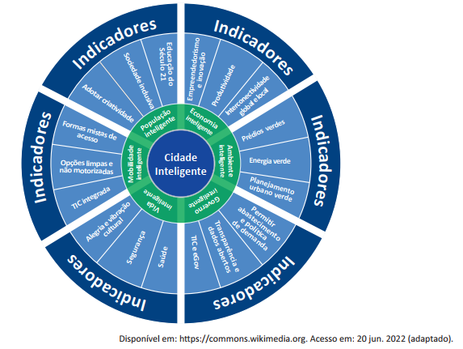
Considerando as informações apresentadas no texto e na figura, avalie as afirmações a seguir.
I. Uma política de dados abertos restringe a interconectividade global e local em cidades inteligentes.
II. Nas cidades inteligentes, a dimensão econômica costuma ter enfoque não apenas na produção industrial, mas também na diversificação de sua matriz econômica.
III. A inovação, nas cidades inteligentes, incorpora opções limpas e não motorizadas de mobilidade.
IV. O planejamento urbano verde centrado no cidadão constitui característica importante de uma cidade inteligente.
Nos últimos anos, observou-se uma transformação rápida no ecossistema dos negócios de impacto no Brasil e no mundo. Diversos modelos e iniciativas surgiram com o propósito de minimizar um problema social e/ou ambiental por meio de sua atividade principal (seu produto/serviço e/ou sua forma de operação).
Disponível em: https://aliancapeloimpacto.org.br/wp-content/uploads/2020/03/ice-estudo-negocios-de-impacto-2019-web.pdf.Acesso em: 16 jul. 2022 (adaptado).
A respeito dos negócios de impacto, avalie as afirmações a seguir.
I. Os negócios de impacto social são impedidos de obter lucro em suas operações, em virtude de seu caráter filantrópico.
II. As ferramentas tradicionais de gestão podem ser utilizadas no gerenciamento dos negócios de impacto social, apesar de suas diferenças conceituais.
III. Uma outra forma de se referir às empresas de impacto social é o termo startup, conceito fundado para denominar esse tipo de organização.
IV. Os negócios de impacto caracterizam-se como empreendedorismo por necessidade, visto que são criados a partir da necessidade de geração de renda.
V. O ecossistema dos negócios de impacto inclui aceleradoras e incubadoras que atuam com esses modelos de negócios.
II e V.
O binômio “ideia inovadora + tecnologia” não é a chave inequívoca para o sucesso, por quê? A chave da questão é o “modelo de negócios”, que pode ser traduzido como o elemento que faz a conexão entre o que a tecnologia proporciona e o que o mercado quer. Uma nova tecnologia que não tenha um modelo específico de negócios deve saber como extrair valor da inovação tecnológica. Portanto, o empreendedor precisa estruturar bem o seu modelo de negócio, compreendendo como os vários recursos interagem, muitas vezes, de forma complexa, e como a empresa pode criar e capturar valor a partir dessa interação. No segmento do turismo, por exemplo, muitas pessoas não têm expertise ou tempo para consultar hotéis na internet ou para entrar em um site de pesquisa de passagens. Para elas, é melhor ir a uma agência. Os modelos de negócios inovadores que surgiram nesse segmento modificaram a estrutura do mercado, e as agências de turismo do passado que tinham como business core o cliente médio ficaram pelo caminho. Com isso, surgiram novos modelos de negócios focados em nichos específicos (por exemplo, o turismo popular) ou produtos customizados (por exemplo, Safari na Namíbia).
AFONSO, J. R. R.; NOBREGA, M. Tecnologia disruptiva e empreendedorismo. Revista Conjuntura Econômica, v. 76, n. 4, p. 18-21, abr. 2022 (adaptado).
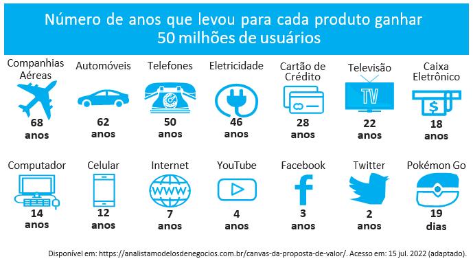
Considerando os textos e as ferramentas para desenvolvimento de modelos de negócios, avalie as afirmações a seguir.
I. As características como design arrojado e desempenho do produto determinam os resultados que uma startup obterá no processo de desenvolvimento de novas tecnologias.
II. Os modelos de negócios com características disruptivas provocaram transformações nos padrões e modelos de negócios existentes no turismo.
III. As empresas que não utilizam as tecnologias disponíveis para alcançar seus clientes estão condenadas ao fracasso, em decorrência das mudanças de padrões no segmento de turismo.
IV. O encaixe problema-solução, no desenvolvimento de um modelo de negócio, auxilia o empreendedor a criar produtos e serviços alinhados às necessidades dos clientes.
V. O Business Model Canvas é uma ferramenta muito utilizada para o desenvolvimento de modelos de negócios, sendo composto por blocos que auxiliam o empreendedor na identificação e visualização de diferentes aspectos do modelo do negócio.
I, II e V.
I, III e V.
II, IV e V.
Praticar a responsabilidade social empresarial requer atenção a múltiplas exigências no tocante a relações de parceria entre clientes e fornecedores, produção de qualidade, contribuições para o desenvolvimento da comunidade, investimentos em pesquisa tecnológica, preservação do meio ambiente, redução de ações predatórias, participação dos trabalhadores nos resultados organizacionais, qualificação profissional, respeito ao cidadão etc. Ao praticar conduta ética e socialmente responsável, a organização alcança o respeito das pessoas e das comunidades que atinge, engajando seus colaboradores e conquistando a preferência dos consumidores. A atuação socialmente responsável da empresa depende diretamente do modelo de gestão implementado. Quando o modelo e as diretrizes estratégicas são pautados pela responsabilidade social, as pessoas envolvidas primarão pela ética e ações sociais, visto que o próprio ambiente as conduz nessa direção.
AMORIM, T. N. G. F. Responsabilidade social corporativa. In: ALBUQUERQUE, J. L. (org.) Gestão ambiental e responsabilidade social:conceitos, ferramentas e aplicações. São Paulo: Atlas, 2009 (adaptado).
Considerando a abordagem realizada no texto, pode-se afirmar que uma empresa cumpre seu papel social com êxito quando
a preferência dos consumidores e o engajamento dos colaboradores não são influenciados pelo modelo de gestão implementado pela empresa.
o respeito pelas pessoas e pelas comunidades antecede a prática da empresa, considerando que a responsabilidade social empresarial é uma exigência imposta pelo mercado e pelos fornecedores.
o modelo de gestão for pautado tanto pela responsabilidade social quanto pela atmosfera interna, contribuindo, assim, para a prevalência de condutas éticas, respeito às pessoas e engajamento dos colaboradores.
a preservação do meio ambiente é atendida pela empresa, pois é um fator que amplia a sua participação no mercado, considerando que esse é um dos problemas contemporâneos que mais exige atenção das organizações.
a participação dos trabalhadores nos resultados organizacionais reflete o engajamento deles no conjunto dos procedimentos internos, primando pela ética e pelas ações sociais e fortalecendo, assim, a imagem pública da empresa.
Grande parte das atividades de organizações empresariais é sujeita a regulamentação estatal, a exemplo das demonstrações financeiras de empresas de capital aberto e das especificações de produtos definidas pelo Instituto Nacional de Metrologia, Qualidade e Tecnologia (INMETRO). Além da regulamentação estatal, há setores que utilizam mecanismos de autorregulamentação, como o setor de comunicação publicitária, que se orienta por definições do Conselho Nacional de Autorregulamentação Publicitária (CONAR). Esse Conselho analisa o componente ético das atividades do setor, com base no seu código de ética e em resoluções próprias. Não trata, porém, de todas as questões do campo. Por exemplo, questões de propaganda política são analisadas pelos tribunais eleitorais. Há, também, iniciativas de autorregulamentação em setores como o bancário e o de mídia impressa e eletrônica.
Considerando o contexto acima, avalie as seguintes asserções e a relação proposta entre elas.
I. A autorregulamentação é uma alternativa adicional de controle sobre possíveis desvios éticos entre organizações dos setores que a adotam.
II. Executivos de empresas de setores autorregulamentados atuam em um ambiente ético bem estruturado, o que permite que se desprendam das regulamentações externas oriundas de agências governamentais, já que têm as referências setoriais como base para a análise ética de suas decisões.
Uma startup, cuja missão é auxiliar estudantes de diversas áreas a encontrarem o seu primeiro emprego, tem um modelo de negócio cujas receitas são obtidas predominantemente a partir de anúncios pagos por recrutadores. Atualmente, a startup possui um cadastro com mais de 350 000 estudantes, que contém desde informações curriculares até dados pessoais dos candidatos. Visando expandir suas receitas, os fundadores estão cogitando a venda de dados dos usuários de sua base para outras empresas de varejo, que têm interesse em obter informações de perfil desse público. Após consulta à Lei n. 13.709/2018 (Lei Geral de Proteção de Dados - LGPD), descobriram que a comercialização de dados pessoais é proibida no ordenamento jurídico brasileiro. Entretanto, o artigo 12 da referida lei dispõe o seguinte:
“Art. 12. Os dados anonimizados não serão considerados dados pessoais para os fins desta Lei, salvo quando o processo de anonimização ao qual foram submetidos for revertido, utilizando exclusivamente meios próprios, ou quando, com esforços razoáveis, puder ser revertido.
§ 1º A determinação do que seja razoável deve levar em consideração fatores objetivos, tais como custo e tempo necessários para reverter o processo de anonimização, de acordo com as tecnologias disponíveis, e a utilização exclusiva de meios próprios.
§ 2º Poderão ser igualmente considerados como dados pessoais, para os fins desta Lei, aqueles utilizados para formação do perfil comportamental de determinada pessoa natural, se identificada.”
Em relação ao artigo 5 da LGPD, considera-se:
“III - dado anonimizado: dado relativo a titular que não possa ser identificado, considerando a utilização de meios técnicos razoáveis e disponíveis na ocasião de seu tratamento.”
Com base nas informações apresentadas, a comercialização dos dados pela startup é
viável, desde que não sejam fornecidas imagens dos usuários.
viável, desde que sejam excluídos o CPF e o nome dos usuários.
viável, desde que respeitados os critérios de anonimização dos dados.
inviável, uma vez que não é possível garantir a anonimização dos dados.
inviável, uma vez que as técnicas atuais de armazenamento de dados impedem a separação de informações pessoais.
Segundo a pesquisa Retratos da Leitura no Brasil, realizada pelo Instituto Pró-Livro, a média anual brasileira de livros lidos por habitante era, em 2011, de 4,0. Em 2007, esse mesmo parâmetro correspondia a 4,7 livros por habitante/ano.
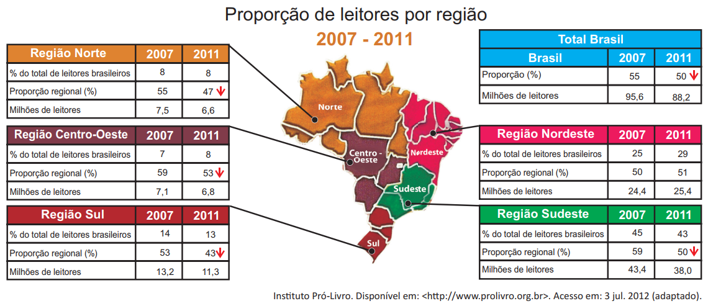
De acordo com as informações apresentadas acima, verifica-se que
metade da população brasileira é constituída de leitores que tendem a ler mais livros a cada ano.
o Nordeste é a região do Brasil em que há a maior proporção de leitores em relação à sua população.
o número de leitores, em cada região brasileira, corresponde a mais da metade da população da região.
o Sudeste apresenta o maior número de leitores do país, mesmo tendo diminuído esse número em 2011.
a leitura está disseminada em um universo cada vez menor de brasileiros, independentemente da região do país.
O Cerrado, que ocupa mais de 20% do território nacional, é o segundo maior bioma brasileiro, menor apenas que a Amazônia. Representa um dos hotspots para a conservação da biodiversidade mundial e é considerado uma das mais importantes fronteiras agrícolas do planeta.
Considerando a conservação da biodiversidade e a expansão da fronteira agrícola no Cerrado, avalie as afirmações a seguir.
I. O Cerrado apresenta taxas mais baixas de desmatamento e percentuais mais altos de áreas protegidas que os demais biomas brasileiros.
II. O uso do fogo é, ainda hoje, uma das práticas de conservação do solo recomendáveis para controle de pragas e estímulo à rebrota de capim em áreas de pastagens naturais ou artificiais do Cerrado.
III. Exploração excessiva, redução progressiva do habitat e presença de espécies invasoras estão entre os fatores que mais provocam o aumento da probabilidade de extinção das populações naturais do Cerrado.
IV. Elevação da renda, diversificação das economias e o consequente aumento da oferta de produtos agrícolas e da melhoria social das comunidades envolvidas estão entre os benefícios associados à expansão da agricultura no Cerrado.
A floresta virgem é o produto de muitos milhões de anos que passaram desde a origem do nosso planeta. Se for abatida, pode crescer uma nova floresta, mas a continuidade é interrompida. A ruptura nos ciclos de vida natural de plantas e animais significa que a floresta nunca será aquilo que seria se as árvores não tivessem sido cortadas. A partir do momento em que a floresta é abatida ou inundada, a ligação com o passado perde-se para sempre. Trata-se de um custo que será suportado por todas as gerações que nos sucederem no planeta. É por isso que os ambientalistas têm razão quando se referem ao meio natural como um “legado mundial”.
Mas, e as futuras gerações? Estarão elas preocupadas com essas questões amanhã? As crianças e os jovens, como indivíduos principais das futuras gerações, têm sido, cada vez mais, estimulados a apreciar ambientes fechados, onde podem relacionar-se com jogos de computadores, celulares e outros equipamentos interativos virtuais, desviando sua atenção de questões ambientais e do impacto disso em vidas no futuro, apesar dos esforços em contrário realizados por alguns setores. Observe- se que, se perguntarmos a uma criança ou a um jovem se eles desejam ficar dentro dos seus quartos, com computadores e jogos eletrônicos, ou passear em uma praça, não é improvável que escolham a primeira opção. Essas posições de jovens e crianças preocupam tanto quanto o descaso com o desmatamento de florestas hoje e seus efeitos amanhã.
SINGER, P. Ética Prática. 2 ed. Lisboa: Gradiva, 2002, p. 292 (adaptado).
É um título adequado ao texto apresentado acima:
Uso de tecnologias pelos jovens: indiferença quanto à preservação das florestas
Preferências atuais de lazer de jovens e crianças: preocupação dos ambientalistas
Engajamento de crianças e jovens na preservação do legado natural: uma necessidade imediata
Redução de investimentos no setor de comércio eletrônico: proteção das gerações futuras
É ou não ético roubar um remédio cujo preço é inacessível, a fim de salvar alguém, que, sem ele, morreria? Seria um erro pensar que, desde sempre, os homens têm as mesmas respostas para questões desse tipo. Com o passar do tempo, as sociedades mudam e também mudam os homens que as compõem. Na Grécia Antiga, por exemplo, a existência de escravos era perfeitamente legítima: as pessoas não eram consideradas iguais entre si, e o fato de umas não terem liberdade era considerado normal. Hoje em dia, ainda que nem sempre respeitados, os Direitos Humanos impedem que alguém ouse defender, explicitamente, a escravidão como algo legítimo.
MINISTÉRIO DA EDUCAÇÃO. Secretaria de Educação Fundamental. Ética. Brasília, 2012. Disponível em: <portal.mec.gov.br>. Acesso em: 16 jul. 2012 (adaptado).
Com relação a ética e cidadania, avalie as afirmações seguintes.
I. Toda pessoa tem direito ao respeito de seus semelhantes, a uma vida digna, a oportunidades de realizar seus projetos, mesmo que esteja cumprindo pena de privação de liberdade, por ter cometido delito criminal, com trâmite transitado e julgado.
II. Sem o estabelecimento de regras de conduta, não se constrói uma sociedade democrática, pluralista por definição, e não se conta com referenciais para se instaurar a cidadania como valor.
III. Segundo o princípio da dignidade humana, que é contrário ao preconceito, toda e qualquer pessoa é digna e merecedora de respeito, não importando, portanto, sexo, idade, cultura, raça, religião, classe social, grau de instrução e orientação sexual.
A globalização é o estágio supremo da internacionalização. O processo de intercâmbio entre países, que marcou o desenvolvimento do capitalismo desde o período mercantil dos séculos 17 e 18, expande-se com a industrialização, ganha novas bases com a grande indústria nos fins do século 19 e, agora, adquire mais intensidade, mais amplitude e novas feições. O mundo inteiro torna-se envolvido em todo tipo de troca: técnica, comercial, financeira e cultural. A produção e a informação globalizadas permitem a emergência de lucro em escala mundial, buscado pelas firmas globais, que constituem o verdadeiro motor da atividade econômica.
SANTOS, M. O país distorcido. São Paulo: Publifolha, 2002 (adaptado).
No estágio atual do processo de globalização, pautado na integração dos mercados e na competitividade em escala mundial, as crises econômicas deixaram de ser problemas locais e passaram a afligir praticamente todo o mundo. A crise recente, iniciada em 2008, é um dos exemplos mais significativos da conexão e interligação entre os países, suas economias, políticas e cidadãos.
Considerando esse contexto, avalie as seguintes asserções e a relação proposta entre elas.
I. O processo de desregulação dos mercados financeiros norte-americano e europeu levou à formação de uma bolha de empréstimos especulativos e imobiliários, a qual, ao estourar em 2008, acarretou um efeito dominó de quebras nos mercados.
II. As políticas neoliberais marcam o enfraquecimento e a dissolução do poder dos Estados nacionais, bem como asseguram poder aos aglomerados financeiros que não atuam nos limites geográficos dos países de origem.
O anúncio feito pelo Centro Europeu para a Pesquisa Nuclear (CERN) de que havia encontrado sinais de uma partícula que pode ser o bóson de Higgs provocou furor no mundo científico. A busca pela partícula tem gerado descobertas importantes, mesmo antes da sua confirmação. Algumas tecnologias utilizadas na pesquisa poderão fazer parte de nosso cotidiano em pouco tempo, a exemplo dos cristais usados nos detectores do acelerador de partículas large hadron colider (LHC), que serão utilizados em materiais de diagnóstico médico ou adaptados para a terapia contra o câncer. “Há um círculo vicioso na ciência quando se faz pesquisa”, explicou o diretor do CERN. “Estamos em busca da ciência pura, sem saber a que servirá. Mas temos certeza de que tudo o que desenvolvemos para lidar com problemas inéditos será útil para algum setor.”
CHADE, J. Pressão e disputa na busca do bóson. O Estado de S. Paulo,p. A22, 08/07/2012 (adaptado).
Considerando o caso relatado no texto, avalie as seguintes asserções e a relação proposta entre elas.
I. É necessário que a sociedade incentive e financie estudos nas áreas de ciências básicas, mesmo que não haja perspectiva de aplicação imediata.
II. O desenvolvimento da ciência pura para a busca de soluções de seus próprios problemas pode gerar resultados de grande aplicabilidade em diversas áreas do conhecimento.
Legisladores do mundo se comprometem a alcançar os objetivos da Rio+20
Reunidos na cidade do Rio de Janeiro, 300 parlamentares de 85 países se comprometeram a ajudar seus governantes a alcançar os objetivos estabelecidos nas conferências Rio+20 e Rio 92, assim como a utilizar a legislação para promover um crescimento mais verde e socialmente inclusivo para todos.Após três dias de encontros na Cúpula Mundial de Legisladores, promovida pela GLOBE International — uma rede internacional de parlamentares que discute ações legislativas em relação ao meio ambiente —, os participantes assinaram um protocolo que tem como objetivo sanar as falhas no processo da Rio 92.Em discurso durante a sessão de encerramento do evento, o vice-presidente do Banco Mundial para a América Latina e o Caribe afirmou: “Esta Cúpula de Legisladores mostrou claramente que, apesar dos acordos globais serem úteis, não precisamos esperar. Podemos agir e avançar agora, porque as escolhas feitas hoje nas áreas de infraestrutura, energia e tecnologia determinarão o futuro”.
Disponível em: <www.worldbank.org/pt/news/2012/06/20>.Acesso em: 22 jul. 2012 (adaptado).
O compromisso assumido pelos legisladores, explicitado no texto acima, é condizente com o fato de que
os acordos internacionais relativos ao meio ambiente são autônomos, não exigindo de seus signatários a adoção de medidas internas de implementação para que sejam revestidos de exigibilidade pela comunidade internacional.
a mera assinatura de chefes de Estado em acordos internacionais não garante a implementação interna dos termos de tais acordos, sendo imprescindível, para isso, a efetiva participação do Poder Legislativo de cada país.
as metas estabelecidas na Conferência Rio 92 foram cumpridas devido à propositura de novas leis internas, incremento de verbas orçamentárias destinadas ao meio ambiente e monitoramento da implementação da agenda do Rio pelos respectivos governos signatários.
a atuação dos parlamentos dos países signatários de acordos internacionais restringe-se aos mandatos de seus respectivos governos, não havendo relação de causalidade entre o compromisso de participação legislativa e o alcance dos objetivos definidos em tais convenções.
a Lei de Mudança Climática aprovada recentemente no México não impacta o alcance de resultados dos compromissos assumidos por aquele país de reduzir as emissões de gases do efeito estufa, de evitar o desmatamento e de se adaptar aos impactos das mudanças climáticas.
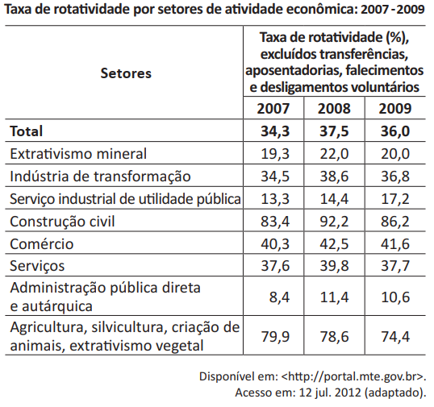
A tabela acima apresenta a taxa de rotatividade no mercado formal brasileiro, entre 2007 e 2009. Com relação a esse mercado, sabe-se que setores como o da construção civil e o da agricultura têm baixa participação no total de vínculos trabalhistas e que os setores de comércio e serviços concentram a maior parte das ofertas. A taxa média nacional é a taxa média de rotatividade brasileira no período, excluídos transferências, aposentadorias, falecimentos e desligamentos voluntários.
Com base nesses dados, avalie as afirmações seguintes.
I. A taxa média nacional é de, aproximadamente, 36%.
II. O setor de comércio e o de serviços, cujas taxas de rotatividade estão acima da taxa média nacional, têm ativa importância na taxa de rotatividade, em razão do volume de vínculos trabalhistas por eles estabelecidos.
III. As taxas anuais de rotatividade da indústria de transformação são superiores à taxa média nacional.
IV. A construção civil é o setor que apresenta a maior taxa de rotatividade no mercado formal brasileiro, no período considerado.
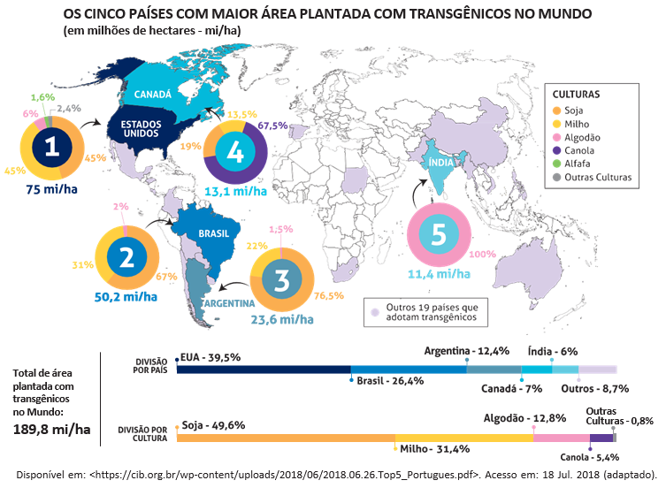
Considerando o infográfico apresentado, avalie as afirmações a seguir.
I. A distribuição da área plantada com transgênicos no mundo reflete o nível de desenvolvimento econômico dos países.
II. Os Estados Unidos da América possuem a maior área plantada de algodão transgênico no mundo.
III. O hemisfério norte concentra a maior área de produção transgênica.
IV. A área de produção de soja transgênica é maior no Brasil que na Argentina.
A Economia Solidária expressa formas de organização econômica – de produção, prestação de serviços, comercialização, finanças e consumo – baseadas no trabalho associado, na autogestão, na propriedade coletiva dos meios de produção, na cooperação e na solidariedade. São diversas atividades econômicas realizadas por organizações solidárias como cooperativas, associações, empresas recuperadas por trabalhadores em regime de autogestão, grupos solidários informais, fundos rotativos etc. Nos últimos anos, a Economia Solidária tem experimentado expansão no Brasil, em especial, dentre os segmentos populacionais mais vulneráveis.
Disponível em: <http://www.unisolbrasil.org.br/2015/>. Acesso em: 12 jul. 2018 (adaptado).
Considerando as informações apresentadas, avalie as asserções a seguir e a relação proposta entre elas.
I. O fomento de atividades econômicas orientadas pelos princípios da Economia Solidária deve ser objeto de atenção no âmbito da gestão pública e requer políticas voltadas para essa área de atuação.
II. A destinação de recursos públicos para empreendimentos fundamentados na Economia Solidária viabiliza a inclusão de diversos segmentos sociais na economia e promove a valorização de práticas e saberes construídos coletivamente.
As questões relacionadas a organismos geneticamente modificados deixaram, há muito tempo, de serem discutidas apenas no âmbito acadêmico-científico. Também na arte, a transgenia ganhou lugar, ocupando o imaginário e a criatividade de artistas. Nesse campo, o brasileiro Eduardo Kac transita pela zona fronteiriça entre arte, ciência e tecnologia.
Os trabalhos de Eduardo Kac têm sido exibidos em exposições internacionais. Em seu currículo, constam obras de arte transgênicas, como GFP Bunny, uma coelha geneticamente modificada cujo pelo emite fluorescência verde ao ser iluminado por luz ultravioleta. Ela foi batizada com esse nome em razão da proteína verde fluorescente (green fluorescent protein) obtida de uma água-viva do Pacífico e injetada em óvulos de coelhos albinos, procedimento efetivamente realizado em um centro de pesquisa na França.
Disponível em: <www.g1.globo.com/Noticias/PopArte/>. Acesso em: 18 ago. 2018 (adaptado).
A partir das informações apresentadas, avalie as afirmações a seguir.
I. A obra GFP Bunny, de Eduardo Kac, contribui para a ampliação dos horizontes artísticos por meio do uso da engenharia genética como técnica de criação artística.
II. A obra GFP Bunny suscita várias questões, entre as quais se inclui a de caráter ético, como, por exemplo, a dos limites da pesquisa científica e do uso de aplicações tecnológicas.
III. As obras de arte biotecnológicas promovem a circulação de conceitos do campo da arte e de técnicas laboratoriais, mas, ao mesmo tempo, banaliza a singularidade da produção do artista.
Os fluxos migratórios, fenômenos que remontam à própria história da humanidade, estão em ritmo crescente no mundo, tornando urgentes, em todos os países, as discussões sobre políticas públicas para migrantes. Segundo relatório da Organização das Nações Unidas (ONU), 65,6 milhões de pessoas foram deslocadas à força no mundo em 2016.
Em relação aos destinos de acolhimento, no mesmo período, dados oficiais do Alto Comissariado das Nações Unidas para Refugiados (ACNUR), apontam que 56% das pessoas deslocadas no mundo foram acolhidas por países da África e do Oriente Médio, 17% da Europa e 16% das Américas. Considerando o contexto brasileiro, de 2010 a 2015, a população de migrantes vindos de países da América do Sul cresceu 20% e alcançou o total de 207 mil pessoas.
Disponível em:< https://nacoesunidas.org/populacao-de-migrantes-no-brasil-aumentou-20-no-periodo-2010-2015- revela-agencia-da-onu/.Acesso em: 11 set. 2018 (adaptado).
Recentemente, a situação de imigração no Brasil, por ondas de deslocamento de pessoas nas fronteiras, tem sido percebida cotidianamente em matérias divulgadas pela grande mídia, principalmente no caso do estado de Roraima, que tem notificado a entrada de um grande número de venezuelanos. Somente em solicitações, na condição de refugiados, os venezuelanos formalizaram 17.865 pedidos de acolhida ao Brasil em 2017.
Disponível em: <http://www.acnur.org/portugues/dados-sobre-refugio/dados-sobre-refugio-no-brasil/>.Acesso em: 11 set. 2018 (adaptado).
Considerando as informações apresentadas, avalie as afirmações a seguir.
I. A situação econômica dos países é fator determinante dos padrões de contorno dos deslocamentos internacionais e está representada na distribuição geográfica dos continentes que mais acolhem as pessoas deslocadas no mundo.
II. A América do Sul é a região em que há maior acolhimento de povos que, em razão de conflitos internos em seus países, têm se deslocado em massa.
III. As situações de conflitos entre brasileiros e venezuelanos apontam para a necessidade de revisão da infraestrutura e das políticas públicas voltadas aos migrantes e refugiados.
IV. A sociedade brasileira, caracterizada pela solidariedade e tolerância, apresenta baixa resistência e rejeição aos imigrantes, sendo os conflitos recentes ocorridos na fronteira explicados pela omissão estatal em relação a políticas de acolhimento.
A frase em latim “Ex Africa semper aliquid novi”, do escritor romano Caio Plínio, dita há 2.000 anos, significa “da África sempre há novidades a reportar”. A partir dessa ideia, o curador alemão Alfons Hug montou a exposição “Ex Africa”, que conta com 18 artistas de oito países africanos e dois artistas brasileiros. A ideia da mostra é retratar a produção artística africana sem estereótipos aos quais estamos acostumados, como objetos de artesanato e referências iconográficas.
Disponível em: <https://www1.folha.uol.com.br/ilustrada/2018/>. Acesso em: 12 jul. 2018 (adaptado).
Até as vésperas da era colonial moderna era comum encontrar as imagens positivas sobre a África. Árabes e europeus descreveram as formas políticas africanas altamente elaboradas e socialmente aperfeiçoadas, entre as quais se alternavam reinos, impérios, cidades-Estado, entre outras. Após a conferência de Berlim (1885), que definiu a partilha colonial da África, essas imagens “simpáticas” começaram a sombrear. Reinos e Impérios foram substituídos pelas tribos primitivas em estado de guerra permanente, umas contra outras, para justificar e legitimar a Missão Civilizadora, que até hoje alimenta o imaginário da África no Brasil.
VIEIRA, F. S. S. Do eurocentrismo ao afropessimismo: reflexão sobre a construção do imaginário “África” no Brasil.Em Debate. PUC-Rio, n. 03, 2006 (adaptado).
A partir dos textos apresentados, avalie as afirmações a seguir.
I. A África tem sido pensada, por muitos, como um único país, compreendida de forma monolítica, como se fosse formada por cultura única, ou, até mesmo, um lugar de povos sem cultura alguma, o que contribui e reforça a exclusão social das obras africanas do sistema das artes visuais.
II. Construídas sob a égide do clichê da miserabilidade, as clássicas representações sobre a África, que retratam o continente como um celeiro da tradição, do arcaísmo, da produção manufaturada e artesanal, são estereótipos que precisam ser superados, por serem incompatíveis com a multiplicidade de expressões artísticas africanas.
III. Os estereótipos sobre o continente africano foram construídos a partir de interesses políticos, culturais e econômicos que sustentaram, durante séculos, projetos de exploração e ações excludentes.
Com base em dados de 2015, estima-se que, no Brasil, haja em torno de 100 mil pessoas em situação de rua. A população que vivencia situação de rua é formada por pessoas que, em sua maioria, possuem menos que o necessário para atender às necessidades básicas do ser humano, estando no limite da indigência ou da pobreza extrema, com comprometimento da própria sobrevivência. A situação desse grupo excluído e marginalizado pode decorrer de diversos fatores, como desemprego estrutural, migração, uso prejudicial de álcool e outras drogas, presença de transtornos mentais, conflitos familiares, entre outros.
HINO, P.; SANTOS, J. O.; ROSA, A. S. Pessoas que vivenciam situação de rua sob o olhar da saúde. Revista Brasileira de Enfermagem. v. 71,Suplemento 1, p. 732-740, 2018 (adaptado).
O Ministério da Saúde, em parceria com o Ministério do Desenvolvimento Social e Combate à Fome (MDS) e a Secretaria de Direitos Humanos da Presidência da República (SDH), lançou uma campanha que objetiva valorizar a saúde como um direito humano de cidadania e ressaltar que as pessoas em situação de rua têm o direito de ser atendidas na rede de serviços do SUS.
Disponível em: <http://portalsaude.saude.gov.br/index.php/cidadao/principal/campanhas-publicitarias/19300-campanha-pop-rua>.Acesso em: 11 set. 2018 (adaptado).
A respeito da população que vivencia situação de rua e considerando os textos apresentados, avalie as afirmações a seguir.
I. Na elaboração de políticas públicas, devem ser considerados os fatores pessoais e contextuais que levam pessoas a viver em situação de rua, o que exige o trabalho de equipes multidisciplinares, com o objetivo de assegurar direitos de saúde, dignidade e cidadania a essa população.
II. A inexistência de endereço fixo que possibilite fazer cadastros oficiais e estabelecer contato quando necessário, inviabiliza a inserção dos indivíduos em situação de rua nas políticas públicas de saúde, educação e moradia.
III. A homogeneidade do grupo de pessoas que vivem em situação de rua contribui para o desenvolvimento das estratégias de acolhimento e de atendimento pelas equipes envolvidas em campanhas dirigidas a esse público.
IV. A falta de moradia convencional e o comprometimento da identidade, da segurança, do bem-estar físico e emocional e do sentimento de pertencimento são problemas vivenciados pelas pessoas que vivem em situação de rua e requerem atenção do poder público.
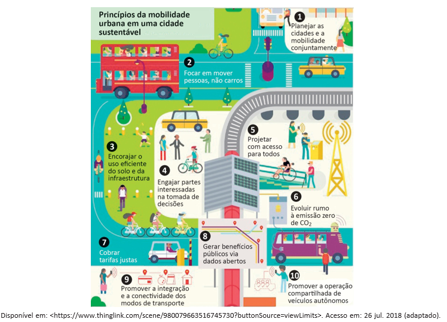
Considerando as informações do infográfico, avalie as afirmações a seguir.
I. No planejamento das cidades, deve-se priorizar o transporte coletivo, situação que está em consonância com o que ocorre nas cidades mais populosas do Brasil.
II. O engajamento dos cidadãos nos debates e no planejamento das cidades é essencial para o desenvolvimento de projetos urbanos viáveis, acessíveis e sustentáveis.
III. É necessário que o planejamento de uma cidade sustentável esteja focado na fluidez dos veículos automotores autônomos, na diversidade de opções de mobilidade e nas modalidades compartilhadas de transporte.
IV. A utilização de painéis solares para abastecer veículos e a diminuição da emissão de gases poluentes em uma cidade sustentável são metas ainda distantes de serem atingidas no Brasil, devido à primazia dos meios de transportes movidos a combustíveis fósseis.
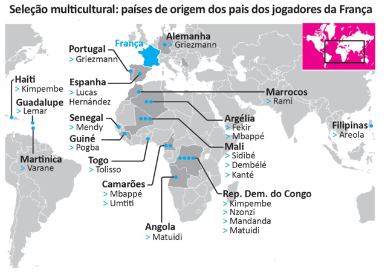
A seleção francesa participante da Copa do Mundo de Futebol de 2018, composta de 19 jogadores filhos de imigrantes da África e de outros países da Europa, foi mais multicultural que o elenco campeão da Copa de 1998. Apenas o goleiro Lloris, o lateral Pavard, o atacante Giroud e o meia Thauvin não se encaixam nessa descrição. Tal composição suscitou inúmeros debates acerca da presença de imigrantes na sociedade francesa e do multiculturalismo na Europa. À perspectiva multicultural se contrapõem a xenofobia, o racismo, a islamofobia, entre outras formas de segregação humana, sobretudo de imigrantes e seus descendentes.
Disponível em: <https://www1.folha.uol.com.br/esporte/2018/07/multiculturais-franca-e-belgica-buscam-unidade-nacional-na-copa.shtml>.Acesso em: 10 jul. 2018 (adaptado).
Considerando as informações apresentadas, assinale a opção correta.
A admiração dos torcedores pelos jogadores da seleção francesa evidencia a redução do preconceito de cidadãos franceses contra descendentes de imigrantes.
O aumento do número de jogadores filhos de imigrantes e a ampliação da diversidade de nacionalidades ameaçam a perpetuação dos valores e da tradição do povo francês.
A inclusão de jogadores de origem árabe e africana na seleção francesa teve o efeito imediato de
minimizar visões e interpretações equivocadas dos efeitos da imigração, como desemprego e pobreza.
A presença de jogadores franceses de origem africana sinaliza a efetiva integração dos imigrantes e de seus descendentes à sociedade francesa, após longo processo de incentivo à inclusão social de estrangeiros no país.
A composição da seleção francesa aponta para a importância da perspectiva multicultural, em que se valorizam as formas de convívio entre os diferentes, a mediação de conflitos identitários e o exercício da alteridade.
A democracia representativa exige, para o seu funcionamento, um conjunto de características, as quais podem ser compreendidas como instituições. São elas: Funcionários eleitos; Eleições livres, justas e frequentes; Sufrágio inclusivo; Direito de concorrer a cargos eletivos; Liberdade de expressão; Fontes de informação diversificadas; Autonomia para as associações. Entre as categorias mencionadas, destacam-se duas como pilares do regime democrático.
Liberdade de expressão: os cidadãos têm o direito de se expressar, sem o perigo de punições severas, quanto aos assuntos políticos de uma forma geral, o que inclui a liberdade de criticar os funcionários do governo, o governo em si, o regime, a ordem socioeconômica e a ideologia dominante.
Fontes de informação diversificadas: os cidadãos têm o direito de buscar fontes de informação, alternativas, diversificadas e independentes. Ademais, a existência de fontes de informação alternativa deve ser protegida por lei.
DAHL, R. A. Sobre a democracia, EDU: UnB, 2001 (adaptado).
Embora os regimes políticos possam ser derrubados e as ideologias criticadas e destituídas de sua legitimidade, por trás de um regime e de sua ideologia há sempre um modo de pensar e de sentir, uma série de hábitos culturais, uma nebulosa de instintos obscuros e de pulsões insondáveis.
ECO, U. O Fascismo Eterno. In: Cinco Escritos Morais. Editora Record: Rio de Janeiro, 2002 (adaptado).
A figura a seguir exemplifica algumas condutas que, segundo Umberto Eco, podem ser consideradas contraditórias aos princípios democráticos.
Com base na concepção de regimes políticos, abordada pelos autores, avalie as afirmações a seguir.
I. A democracia é o sistema que se propõe a assegurar aos seus cidadãos uma liberdade pessoal mais ampla do que outros modelos.
II. A liberdade de expressão no sistema democrático garante que a manifestação de um agente político e de um cidadão possuam repercussões equivalentes.
III. As fake news são manifestações relacionadas à categoria de fontes de informação diversificadas e podem ser utilizadas como estratégia para fragilizar o sistema democrático de governo.
IV. O direito à liberdade de expressão permite a emissão de opinião crítica e discursos contrários à democracia e aos direitos humanos.
Dados do levantamento feito pelo TransgenderEurope (TGEU) mostram que o Brasil permaneceu pelo 13º ano consecutivo como o país que mais mata pessoas transgêneros.
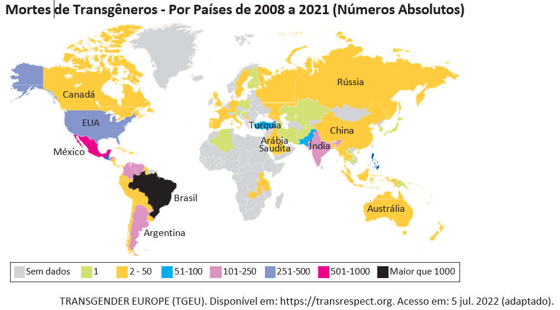
De acordo com dados do Sistema de Informação de Agravos de Notificação (Sinan), do Ministério da Saúde, houve um crescimento bruto de 5% nas violências contra homossexuais e 37,1% nas violências contra bissexuais, passando de 4 855 registros em 2018 para 5 330 em 2019. No gráfico a seguir são apresentados os dados percentuais de casos notificados em 2019, de acordo com a orientação sexual das vítimas de violência.
Considerando as informações apresentadas no mapa e no gráfico, bem como a situação social dos grupos LGBTQIAPN+, avalie as afirmações a seguir.
I. Os discursos e as práticas contra a diversidade sexual e de gênero são incompatíveis com as premissas éticas e dos direitos humanos que regem as sociedades democráticas.
II. A violência contra os grupos LGBTQIAPN+ é histórica, simbólica, psicológica e física, ocorrendo em razão de estereótipos e estigmas vigentes na sociedade e por meio de repressões e abusos.
III. A partir dos 40 anos de idade, há uma maior incidência de violência sobre pessoas heterossexuais em relação aos outros grupos, o que indica que a vulnerabilidade independe da orientação sexual.
IV. O Brasil é o país onde se identifica o maior número de mortes de pessoas trans entre os países analisados, situação que revela a necessidade de uma política pública mais assertiva de combate aos crimes cometidos contra os grupos LGBTQIAPN+.
Em 2019, a violência armada foi três vezes maior para a população negra, em comparação com a não negra, tanto para a população geral quanto para o grupo jovem (entre 15 e 29 anos de idade). Quanto à taxa de mortalidade por 100 mil habitantes no grupo de pessoas com até 14 anos de idade, destaca-se, da mesma forma, a desigualdade na vitimização de crianças e adolescentes negros por agressão com arma de fogo, com taxa 3,6 vezes maior do que a de não negros em 2019.
INSTITUTO SOU DA PAZ. Violência armada e racismo: o papel da arma de fogo na desigualdade racial. Disponível em: https://soudapaz.org. Acesso em: 6 jul. 2022 (adaptado).
I. O fator racial é um importante condicionante na análise de dados relativos a homicídios e violência no Brasil na população de adolescentes e jovens.
II. A população negra sofre mais violência do que a população não negra, em razão do racismo estrutural existente no país, além de outras vulnerabilidades sociais associadas a essa forma de preconceito.
Além de tramitar no Judiciário um processo a respeito do Marco Temporal, há também, na Câmara dos Deputados, um projeto em que se tenta transformar a tese do Marco Temporal em lei. Trata-se do Projeto de Lei n. 490/2007, que determina que devem ter direito às terras consideradas ancestrais somente os povos que as estivessem ocupando no dia da promulgação da Constituição Federal, em 5 de outubro de 1988.
Disponível em: https://g1.globo.com. Acesso em: 21 jun. 2022 (adaptado).
O assassinato do indigenista Bruno Pereira e do jornalista Dom Phillips expôs ao mundo a importância da demarcação dos territórios indígenas, assegurada pela Constituição Federal de 1988. Os territórios indígenas, além de preservarem identidades, modos de vida, tradições e culturas desses povos, também são fundamentais para a preservação ambiental. Eles contribuem para conter as emissões de gases de efeito estufa, promover a biodiversidade e potencializar sistemas.
Se mantido o critério do Marco Temporal, a guerra fundiária poderá ser intensificada. Os territórios se tornarão zonas de mais conflitos entre fazendeiros, mineradores, garimpeiros, grileiros, produtores rurais, narcotraficantes, comerciantes de peixes, caçadores e madeireiros, o que resultará na morte de indígenas e de defensores da floresta e, por extensão, dos territórios indígenas.
Com base nos textos e na imagem apresentados, avalie as afirmações a seguir.
I. Os territórios indígenas, com a regulamentação do Marco Temporal, ficarão formalmente protegidos de invasões, e os povos originários poderão manter suas tradições culturais.
II. As ações de grupos de garimpeiros, de pescadores ilegais, de desmatadores e de alguns setores das atividades agropecuárias vêm confrontando os povos originários em disputas territoriais.
III. O aumento da criminalidade nos territórios indígenas está associado aos interesses econômicos de exploração insustentável do meio ambiente, como os relacionados aos garimpos ilegais e ao desmatamento de florestas.
IV. A existência dos movimentos sociais indígenas é essencial para a luta por direitos sociais, culturais e de acesso à terra pelos povos originários, assim como para a preservação do meio ambiente e do modo de vida dos indígenas.
V. O Estado brasileiro está impedido de intervir nas demarcações de territórios indígenas, em respeito à autonomia, à autogestão e à livre determinação dos povos originários, segundo a Constituição Federal de 1988.
I, II, III e IV.
Pesquisa realizada pelo Observatório Brasileiro de Políticas Públicas da Universidade Federal de Minas Gerais (UFMG) aponta que a população em situação de rua aumentou no Brasil em 2022. De janeiro a maio deste ano, mais de 26 mil novas pessoas nessa situação foram registradas no Cadastro Único (CadÚnico) do Governo Federal. No país, mais de 180 mil pessoas estão registradas no CadÚnico.
Disponível em: https://g1.globo.com. Acesso em: 6 jul. 2022 (adaptado).
I. A existência de pessoas em situação de rua no Brasil deriva, sobretudo, das desigualdades sociais oriundas da pandemia de Covid-19.
II. Um dos efeitos da pandemia de Covid-19 foi a ampliação do número de pessoas em situação de rua no Brasil, o que evidencia a segregação socioespacial das cidades brasileiras.
Ao final de 2021, cerca de 89,3 milhões de pessoas estavam deslocadas em todo o mundo, em decorrência de violência, perseguições, violações dos direitos humanos ou outros conflitos em seus locais de origem. Esse contingente de deslocamentos forçados já alcançava mais de 100 milhões de pessoas em maio de 2022, sendo motivados por instabilidades como as ocorridas no Afeganistão, em alguns países africanos e nas regiões da Ucrânia ocupadas pela Rússia, além de outros locais onde já perduravam confrontos armados, como, por exemplo, na Síria.
Disponível em: https://www.acnur.org. Acesso em: 21 jun. 2022 (adaptado).
Com relação às atuais migrações internacionais forçadas, assinale a opção correta.
Os interesses em relação ao tipo de tratamento dispensado aos imigrantes no mundo independem de seus países de origem.
A xenofobia, que consiste no preconceito contra estrangeiros, deve-se à falta de normas internacionais para o tratamento de situações de imigração.
Os refugiados são migrantes de países subdesenvolvidos que se deslocam para países centrais do capitalismo global a fim de servir de mão de obra barata.
As migrações internacionais forçadas surgem da globalização econômica, cujos processos são responsáveis pelo aumento do número de refugiados no mundo.
A condição de migrante internacional forçado diferencia-se da condição geral de imigrante na medida em que se refere ao deslocamento motivado por fatores involuntários, que fogem ao controle do migrante e de sua família.
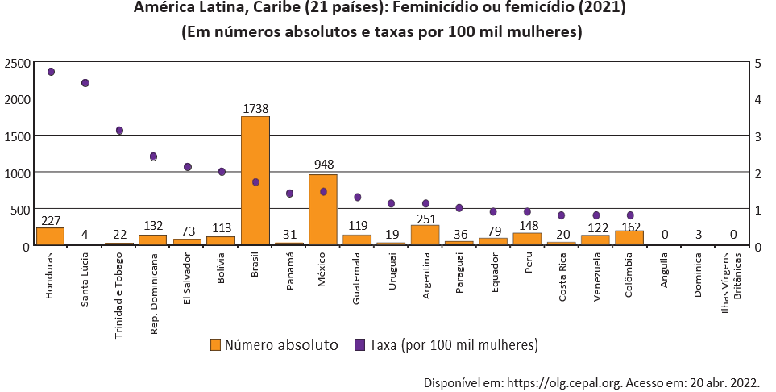
Resultados de pesquisa da Comissão Econômica para a América Latina e o Caribe (CEPAL), vinculada à Organização das Nações Unidas (ONU), apontam que, além do feminicídio íntimo, aquele perpetrado por parceiros ou ex-parceiros da vítima, e do feminicídio sexual sistêmico, em que a vítima é sequestrada e estuprada, há o feminicídio lesbofóbico ou bifóbico, configurado quando a vítima é bissexual ou lésbica e é assassinada porque o agressor entende que deve puni-la por sua orientação sexual.
Disponível em: http://agenciabrasil.ebc.com.br. Acesso em: 22 ago. 2022 (adaptado).
A partir do gráfico e das informações do texto, assinale a opção correta.
O gráfico apresentado ranqueia os países a partir de um cálculo de proporção e, nessa perspectiva, Santa Lúcia apresenta uma das taxas mais baixas de feminicídio na região.
As políticas públicas voltadas às mulheres partem do pressuposto de que elas devem ser as principais responsáveis por sua própria segurança, evitando comportamentos de risco.
Os países da América Latina que apresentam as maiores taxas de ocorrência de feminicídios a cada 100 mil mulheres, de acordo com o gráfico apresentado, são Brasil, México e Argentina.
As formas de violência que afetam as mulheres são determinadas não somente pela condição sexual e de gênero, mas também por diferenças econômicas, etárias, raciais, culturais e religiosas.
O número relativo a cada 100 mil mulheres vítimas de feminicídio no Brasil explica a posição elevada do país no ranking, diferentemente de Honduras, que registra, relativamente, menos ocorrências que o Brasil.
Inicialmente, a natureza transgressora do grafite foi encarada pelo Estado como vandalismo no espaço público e como um perigo para a conservação da propriedade privada, devendo-se, portanto, combatê-lo. Com o tempo, contudo, essa concepção marginal transformou-se, incidindo em uma valorização aceitável pelo Estado e positiva para a sociedade. Essa transição do grafite, de arte marginal para manifestação artística reconhecida e aceita, tem revelado aspectos importantes não somente para os profissionais do grafite, mas para a sociedade como um todo, pois incorpora a possibilidade de ele ser um produto artístico de valor cultural, econômico e ideológico.
PIRES, E. M.; SANTOS, F. A. A cidade de São Paulo e suas dinâmicas: graffiti, Lei Cidade Limpa e publicidade urbana.Anais do Museu Paulista: História e Cultura Material. v. 26, São Paulo, 2018 (adaptado).
Considerando-se o texto e a imagem apresentados, é correto afirmar que o grafite consiste em uma
expressão popular associada à contestação e, por isso, não é reconhecido como arte.
expressão convencional de hierarquias consolidadas ao longo do tempo e ainda presentes na sociedade.
expressão cultural que problematiza os valores e as relações da sociedade com os espaços onde é produzida.
intervenção urbana que traz prejuízos para a sociedade porque gera conflitos latentes entre diferentes classes sociais.
intervenção estéti ca realizada com o propósito de embelezamento padronizado dos espaços urbanos pelo uso de cores intensas e contrastantes.